Nos últimos anos, os ativos virtuais consolidaram-se como instrumentos de inovação tecnológica e financeira, ao mesmo tempo em que representam um desafio crescente para as autoridades policiais. A Polícia Federal assume a missão complexa de investigar crimes que envolvem esses ativos, exigindo dos agentes preparo técnico, atualização constante e estratégias especializadas.
A relevância do tema decorre de fatores determinantes: a estrutura descentrali zada e criptografada de ativos como Bitcoin e Ethereum; sua utilização recorrente em práticas ilícitas, como lavagem de dinheiro, financiamento ao terrorismo e fraudes; a dimensão transnacional das transações, que impõe cooperação internacional; e a evolução contínua das tecnologias, que demanda capacitação permanente.
Este capítulo apresenta fundamentos históricos, normativos e operacionais, além de técnicas aplicadas à identificação, rastreamento, apreensão e alienação de criptoativos. O conteúdo foi estruturado para oferecer uma base sólida de conhecimento e práticas recomendadas, garantindo atuação segura, eficiente e alinhada às diretrizes institucionais diante dos desafios impostos pelos ativos virtuais.
A ideia de criar uma moeda digital descentralizada, sem controle de uma autoridade central, surgiu em 1998 com o pesquisador Nick Szabo, que propôs o conceito do Bit Gold, considerado o precursor do Bitcoin. Szabo também é reconhecido por idealizar os chamados contratos inteligentes, muito difundidos atualmente.
Em 2005, Szabo publicou um artigo em seu blog “Unenumerated”, retomando a proposta do Bit Gold. Ele apontava como problema central do dinheiro fiduciário a dependência da confiança em uma autoridade central, o que historicamente se mostrou frágil em contextos de inflação e instabilidade econômica. Para resolver isso, Szabo sugeriu um sistema baseado em prova de trabalho criptográfica, onde uma sequência de bits seria gerada a partir de um desafio computacional, garantindo segurança e autenticidade sem intermediários.
Em 31 de outubro de 2008, Satoshi Nakamoto publicou o artigo “Bitcoin: A Peer-to-Peer Electronic Cash System” em uma lista de discussão sobre criptografia. O texto propunha um sistema de pagamentos eletrônicos entre partes, sem a necessidade de instituições financeiras. A confiança seria substituída por provas criptográficas e por um sistema de moeda virtual baseado em assinaturas digitais encadeadas. Esse artigo é considerado o marco teórico e tecnológico da Bitcoin, primeira criptomoeda.
A primeira transação de Bitcoin ocorreu em 12 de janeiro de 2009, quando Nakamoto transferiu 10 BTC para o desenvolvedor Hal Finney. Essa operação está registrada na blockchain do Bitcoin e pode ser visualizada na figura a seguir.
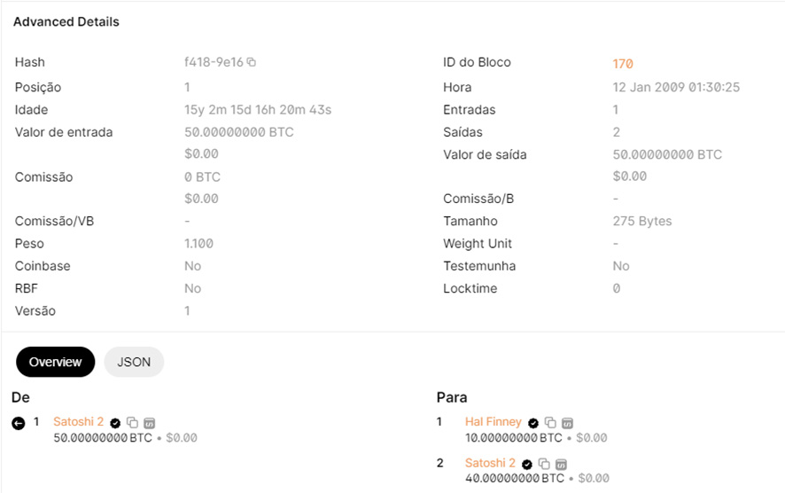
Figura 44-Primeira transação de Bitcoin da história extraída do bloco gê
nese do Bitcoin: Fonte: blockchain.com/explorer com critério de busca o
hash da transação: f4184fc596403b9d638783cf57adfe4c75c605f6356fb
c91338530e9831e9e16
Em 2010, surgiram as primeiras plataformas de negociação de criptomoedas: Bitcoinmarket.com e Mt.Gox (ambas extintas). Atualmente, as principais plata formas globais incluem Binance, Coinbase, OKX, Bybit, entre outras. No Brasil, destacam-se Mercado Bitcoin e Foxbit.
A partir de 2011, surgiram as altcoins, criptomoedas alternativas ao Bitcoin. A primeira foi a Namecoin, seguida pela Litecoin e Dogecoin. Algumas altcoins foram criadas para melhorar funcionalidades da Bitcoin, outras para explorar novos usos ou, infelizmente, como instrumentos de fraude.
Em 2014, surgiu o Tether (USDT), a primeira stablecoin, cujo valor é pareado ao dólar americano. Inicialmente emitido na blockchain da Bitcoin, hoje circula em redes como Ethereum e Tron.
A Altcoin mais relevante é atualmente a Ether, criptomoeda nativa da blockchain Ethereum, lançada em 2015. Diferente da Bitcoin, a blockchain Ethereum permite a criação de aplicativos, tokens (fungíveis e não fungíveis), jogos, ofertas iniciais de moedas (ICO), entre outras funcionalidades. Por isso, é considerada uma blockchain de segunda geração, enquanto a da Bitcoin representa a primeira geração.
Após a criação da Ethereum em 2015, iniciou-se uma nova fase na evolução dos criptoativos, marcada pela introdução dos contratos inteligentes12. Idealizados por Nick Szabo e viabilizados pela Ethereum, esses contratos são programas autônomos que executam ações automaticamente quando condições previamente definidas são atendidas. Diferentemente dos contratos tradicionais, dispensam intermediários, garantindo transparência, imutabilidade e segurança por meio de código. Szabo exemplificou o conceito com uma máquina de refrigerantes: se o valor correto é inserido, o produto é liberado; se maior, há troco; se não houver pagamento, não há entrega. Esse modelo pode ser aplicado a bens digitais e físicos, como veículos com sistemas criptográficos de acesso, que podem ser bloqueados automaticamente em caso de inadimplência.
A tecnologia dos contratos inteligentes transformou as blockchains de simples sistemas de transferência de valor em plataformas capazes de executar lógica programável de forma descentralizada e segura, ampliando o escopo das aplica ções. Essa inovação permitiu o surgimento das Finanças Descentralizadas (DeFi), sistemas de governança, tokenização de ativos e novos modelos de negócio, consolidando a segunda geração das blockchains.
Com a Ethereum, também surgiram os NFTs (Non-Fungible Tokens), tokens 12 De acordo com Resolução BCB 520/2025, contrato inteligente é definido com um programa projetado e executado por meio de algoritmo computacional que promove a automatização de funções associadas a condições predefinidas em sistema baseado na tecnologia de registros distribuídos ou similar. criptográficos únicos e indivisíveis emitidos por meio de contratos inteligentes. Diferentemente dos tokens fungíveis, como criptomoedas, os NFTs possuem meta dados imutáveis que os distinguem entre si, permitindo representar propriedade, procedência e atributos específicos de um item físico ou digital. Essa tecnologia abriu espaço para aplicações em arte digital, colecionáveis, jogos e até registro de ativos reais.
Atualmente, os contratos inteligentes são pilares do ecossistema cripto, sus tentando transações financeiras, gestão de ativos, NFTs, soluções DeFi e sistemas corporativos, além de reduzir custos operacionais e eliminar intermediários. Essa evolução consolidou os criptoativos como instrumentos tecnológicos complexos, com impacto crescente na economia global e desafios significativos para a investigação policial.
Entre 2017 e 2018, ocorreu a explosão das Ofertas Iniciais de Moedas (ICOs), que captaram bilhões de dólares para projetos baseados em blockchain, embora muitas iniciativas tenham fracassado ou se revelado fraudulentas, levando à intensificação da regulação. Nesse período, também surgiram os primeiros tokens não fungíveis (NFTs), que ganharam notoriedade em 2021 com a comercialização de obras digitais e itens colecionáveis por valores milionários.
A partir de 2020, as stablecoins consolidaram-se como instrumentos essenciais para liquidez e proteção contra volatilidade, enquanto o setor DeFi cresceu expo nencialmente, oferecendo empréstimos, corretagem e staking sem intermediários. Em paralelo, começaram os testes com moedas digitais de bancos centrais (CBDCs), hoje em fase avançada em dezenas de países.
Entre 2023 e 2024, o mercado amadureceu com a entrada de investidores institucionais, a aprovação de ETFs de Bitcoin e Ethereum e o fortalecimento da tokenização de ativos reais. Em 2025, o ecossistema cripto apresenta capitali zação trilionária, integração crescente com sistemas financeiros tradicionais e regulamentações mais robustas, como o MiCA na União Europeia e normas da FATF para PSAVs.
Hoje, os criptoativos não se limitam a moedas digitais: abrangem contratos inteligentes, NFTs, stablecoins, DeFi e tokenização de ativos físicos, configurando um ambiente dinâmico que exige constante atualização dos profissionais de segurança pública para enfrentar ilícitos cada vez mais sofisticados.
A compreensão da origem e evolução dos ativos virtuais é essencial para que os profissionais da segurança pública estejam preparados para enfrentar os desafios impostos por essa tecnologia. Desde as primeiras ideias de descentralização até o surgimento de sistemas complexos como Ethereum e os contratos inteligentes, observa-se uma transformação profunda na forma como valores são criados, transferidos e protegidos digitalmente. Esse conhecimento histórico e técnico serve como base para a atuação policial qualificada, permitindo o reconhecimento de padrões, a identificação de ilícitos e o uso estratégico de ferramentas de investigação voltadas ao ambiente virtual.
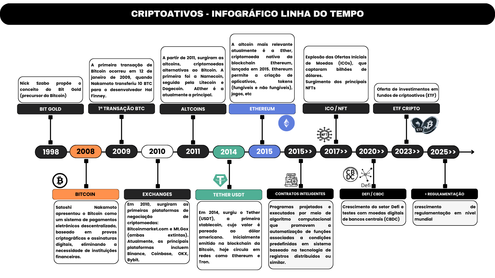
Figura 45-Cronologia dos Ativos Virtuais
Neste subcapítulo, serão apresentadas as noções fundamentais sobre ativos virtuais, incluindo uma análise das características que os diferenciam dos ativos tradicionais. Serão discutidos conceitos-chave como blockchain, chaves assimé tricas, descentralização, carteiras, frase secreta, tokens e contratos inteligentes.
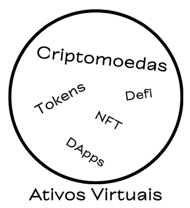
Ativo Virtual é uma representação digital de valor que pode ser transacio nada, armazenada ou trocada eletro nicamente. Esses ativos podem incluir criptomoedas, tokens e outros tipos de ativos digitais que utilizam tecnologias blockchain para garantir sua segurança e descentralização. Ativos virtuais não têm uma existência física e não são necessariamente lastreados por moeda fiduciária. É gênero do qual são espécies:
Figura 46-Ativos virtuais: gênero e espécies
- Fonte: Manual de Apoio à Investigação de
Criptoativos/DFIN/CGRC/Dicor/PF criptomoedas, tokens fungíveis, tokens não fungíveis, finanças descentralizadas, Fan Tokens, aplicações descentralizadas etc.
A Lei 14.478/2022, conhecida como a Lei de Ativos Virtuais, trouxe a seguinte definição de ativo virtual:
Ativo virtual é a representação digital de valor que pode ser
negociada ou transferida por meios eletrônicos e utilizada para
realizar pagamentos ou com a finalidade de investimento.
Trata-se de conceito enunciado no glossário de definições do Grupo de Ação Financeira Internacional (GAFI) a partir do qual a legislação brasileira se inspirou. Com efeito, desde ao menos 2014, através do relatório “Virtual Currencies Key Definitions and Potential AML/CFT Risks”, o GAFI já trazia o conceito de moeda virtual e sua diferenciação em relação à moeda eletrônica. Em 2019, o termo “moeda virtual” foi substituído por “ativo virtual”, oportunidade na qual a definição foi ratificada pelo GAFI no documento “Guidance for a Risk-Based Approach to Virtual Assets and Virtual Asset Service Providers” nos seguintes termos:
Ativo virtual é uma representação digital de valor que pode
ser negociada ou transferida digitalmente e pode ser usada
para fins de pagamento ou investimento. Os ativos virtuais não
incluem representações digitais de moedas fiduciárias, títulos
e outros ativos financeiros que já são abrangidos em outras
partes das Recomendações do GAFI.
A blockchain constitui a base estrutural das transações envolvendo ativos virtuais. Trata-se de um sistema eletrônico distribuído que funciona como um registro público e imutável de transações, operando sem a necessidade de uma autoridade central. O termo blockchain pode se referir à tecnologia de registro distribuído que sustenta sistemas como o Bitcoin, ao conjunto de blocos válidos que compõem o livro-razão compartilhado da rede, ou ainda à cópia completa dessa cadeia mantida por cada nó participante.
Em sistemas financeiros tradicionais, como os bancos, uma autoridade central verifica o saldo antes de autorizar transações simultâneas. Sem essa autoridade central, seria possível realizar duas compras com saldo insuficiente, comprome tendo a integridade do sistema.
Satoshi Nakamoto propôs uma solução descentralizada: registrar publicamente as transações em uma cadeia de blocos, permitindo que os participantes da rede concordem com uma única versão da ordem das transações. Isso eliminaria a necessidade de uma autoridade central e garantiria a integridade dos registros por meio de consenso distribuído.
A blockchain, combinada ao mecanismo de proof-of-work, foi concebida para possibilitar um sistema de transações digitais descentralizado, no qual a ordem cronológica e a integridade das operações são asseguradas, eliminando o risco de gasto duplo13 sem a necessidade de uma autoridade central.
Para compreensão do funcionamento da Blockchain é necessário explorar o conceito de hash. Um hash é uma função (matemática) criptográfica que transforma dados de tamanho variável em uma sequência fixa, única e irreversível. Ele é usado para garantir integridade, pois qualquer alteração mínima nos dados gera um hash completamente diferente.
Observe as frases a seguir e o respectivo hash calculado para cada exemplo:
| Exemplo 1 | Exemplo 2 Parágrafo alterado (mudança visível): |
|---|---|
| Blockchain é uma tecnologia que garante a integridade e segurança das transações em redes descentralizadas. | Hash SHA-256: 23f18b96599e23726d693b309e 43fda84ce7018d19870f4e3a0be7ae 1fdd2136 |
| Blockchain é uma tecnologia que garante a integridade e SEGURANÇA das transa ções em redes descentralizadas. | Hash SHA-256: 8fcbf9dfcd216ed62aa9e6c94bc75062d 2de27a8a60daa9f0a9e950c10ad461d |
Cada bloco da tecnologia blockchain contém um conjunto de transações e um hash14 que representa digitalmente o bloco anterior. Essa estrutura forma uma cadeia contínua de blocos, onde a validação de um novo bloco implica a revalidação de todos os anteriores. Assim, a integridade dos dados é preservada
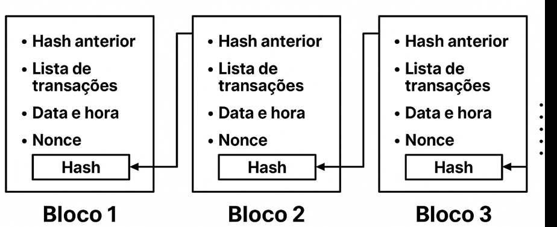
de forma cumulativa e progressiva.
A validação de blocos é realizada por nós da rede, que são computadores interconectados e que mantêm vias completas e atualizadas da cadeia de blocos. Cada novo bloco inclui o hash do bloco anterior, garantindo a continuidade e a imutabilidade da cadeia.
Figura 52 - Cadeia de Blocos segundo Nakamoto.
13 Situação em que um mesmo valor monetário é utilizado mais de uma vez, normalmente por falhas operacionais, técnicas ou intencionais, antes que o sistema bancário consiga pro cessar e liquidar as transações. 14 Resultado da aplicação de uma função matemática chamada função hash criptográfica, que transforma uma entrada de dados (um arquivo, uma senha, um texto, uma imagem) de qualquer tamanho em uma saída de tamanho fixo, geralmente representada em formato hexadecimal.
Tendo em consideração a ideia de Nakamoto, podemos definir blockchain como um banco de dados digital distribuído no qual as transações validadas são registradas como um livro-razão digital público, composto pela prova das transações anteriores e a prova da transação atual, garantindo a integridade dos registros.
Os blocos que compõem a blockchain são formados por lotes de transações (Nakamoto as chama de itens) em que cada uma delas tem um tamanho digital. A quantidade de transações em um bloco pode variar conforme as especificações técnicas da rede blockchain a que se refere. Por exemplo, atualmente cada bloco de Bitcoin carrega entre 1.5 e 1.8 megabytes15, isto é, cada bloco compila um conjunto de transações que, quando somadas, alcançam esse tamanho digital, independentemente da quantidade de transações, pois, como dito, cada uma delas pode ter um tamanho diverso.
Cada uma das transações detém seu próprio hash e, por sua vez, o bloco formado pelo conjunto de transações também detém seu próprio hash. Portanto, podemos afirmar que o hash do bloco é o resultado da solução do algoritmo matemático de todas as transações contidas no lote.
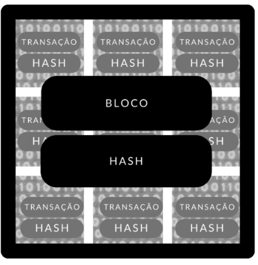
Figura 53 - Ilustração de bloco de tran
sação da blockchain – Fonte: Manual
de Apoio à Investigação de Criptoativos/
DFIN/CGRC/Dicor/PF
Quando novas transações forem realizadas, formarão um novo bloco que conterá não só as transações deste lote, mas também o hash (e somente o hash) do bloco anterior. Dito de outro modo e em linguagem leiga, o hash do bloco atual é a soma do lote atual com o hash do bloco anterior. Mas, como o bloco anterior também é a soma do lote dele próprio com o seu respectivo lote imedia tamente anterior, podemos afirmar que quando um bloco é validado, sendo ele, por exemplo, o 100º bloco, na verdade estarão sendo validados o bloco atual e todos os blocos anteriores, sendo que: o 1º bloco pela 100ª vez, o 2º bloco pela 99ª, o 3º bloco pela 98ª vez, e assim por diante até chegar ao 100º bloco que estará sendo validado pela 1ª vez. Quando o 101º bloco sobrevier, o 100º 15 Fonte: https://ycharts.com/indicators/bitcoin_average_block_size. Acesso em 19/08/2024. bloco será validado pela 2ª vez, pois estará contido na validação do 101º bloco que será validado pela 1ª vez.
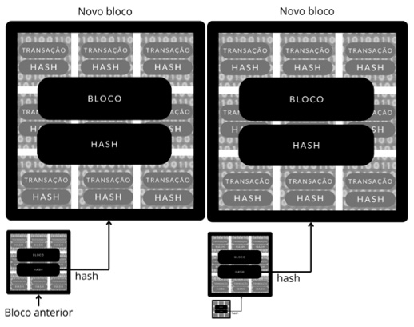
Figura 54 - Ilustração representativa da cadeia de blocos - Fonte: Manual de Apoio à
Investigação de Criptoativos/DFIN/CGRC/Dicor/PF
Sendo assim, cada bloco na blockchain contém um conjunto de transações e um “retrato” digital do bloco anterior, dado pelo hash, de modo a formar uma cadeia contínua de blocos que garante a autenticidade e integridade dos registros, tornando-os imutáveis e resistentes a adulterações.
A blockchain apresenta diversas características que a tornam uma ferramenta robusta para o registro e verificação de transações:
1. Distribuição:
O poder de validação é distribuído entre os nós da rede, eliminando a dependência de uma autoridade central. Para contornar o problema cronológico já mencionado, a solução dada foi a supressão do poder da autoridade central de validação, de modo a distribuir este poder para uma rede de nós independentes, que nada mais são do que computadores detentores de uma via16 completa 16 Prefere-se o termo “via” ao termo “cópia”, porquanto, a via se refere a um documento ori ginal, produzido com a mesma validade jurídica que o documento original principal, enquanto a cópia é uma reprodução de um documento original que não possui o mesmo valor jurídico atualizada de toda a cadeia de blocos. Cada um dos nós é detentor de uma via da cadeia de blocos e, portanto, cada um deles tem poder de validar as novas transações adicionadas à blockchain.
Segundo Baran17, redes de comunicação podem ser classificadas como centralizadas, descentralizadas e distribuídas, conforme a figura a seguir.
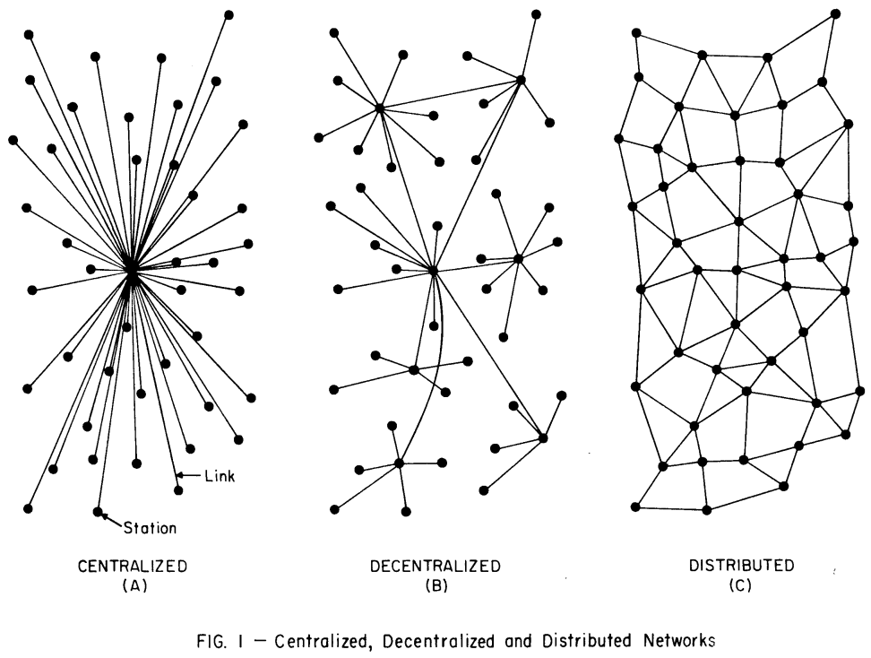
Figura 55 - Tipos de rede, segundo Baran.
A rede centralizada, também chamada de estrela, é altamente vulnerável porque, se o nó central for eliminado, haverá o comprometimento de toda a rede. A rede descentralizada, por sua vez, não compreende somente um nó central, mas uma divisão de responsabilidade entre alguns nós mais importantes do que outros. Contudo, essa rede também pode ser comprometida em decorrência de ataque contra alguns nós. Na rede distribuída, não há prevalência de responsabilidade entre os nós, tampouco um nó central. De fato, todos os nós detêm idêntico nível hierárquico, de modo que as comunicações somente seriam interrompidas em caso de ataque sobre todos os nós simultaneamente.
Ao invés de depender de um único ponto de controle, como um servidor centralizado, a blockchain é mantida por uma rede de computadores interconec tados (nós), ou seja, configura uma rede distribuída na qual os nós se comportam simultaneamente como provedores e usuários da rede e podem verificar se as que a via original, a menos que seja autenticada. 17 BARAN, Paul. On Distributed Communications (Introduction to distributed communcation network). Economic Policy, v. 5, p. 193-208, 2009. novas transações são válidas no que se refere à ordem, porquanto carregam a via completa e atualizada de toda a cadeia. Com efeito, uma vez que uma transação é feita na blockchain os nós realizam a verificação (validação) da transação por meio de esforços para solução de problemas matemáticos para, ao cabo, atestar ou não sua integridade. Não haveria efetividade em tentar congelar transações emitindo ordem para um único nó, pois todos os nós detêm vias dos registros e essas vias contêm a integralidade dos registros. Assim sendo, a rede continuaria a funcionar de qualquer maneira. A figura a seguir representa a rede distribuída da blockchain.
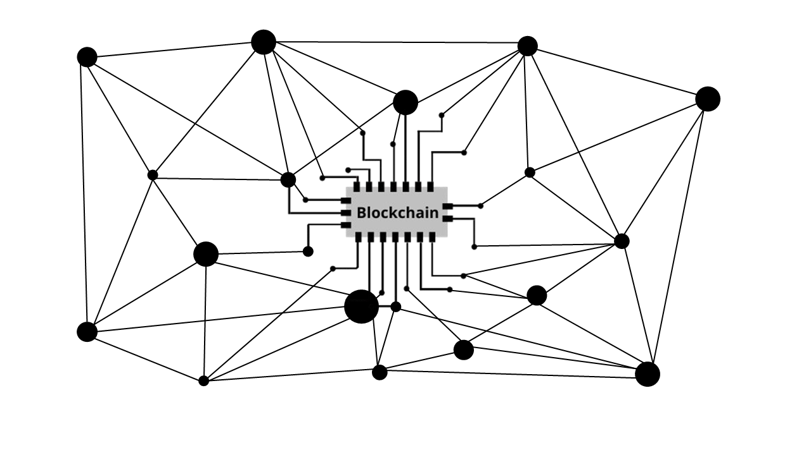
Figura 56 - Ilustração da rede distribuída da blockchain - Fonte: Ma
nual de Apoio à Investigação de Criptoativos/DFIN/CGRC/Dicor/PF
2. Transparência
Os dados dos blocos e das transações que os compõem são públicos e abrangem: o hash da transação; o número do bloco no qual a transação está inserida; as confirmações da transação; a data da realização da transação; o endereço público do remetente; o endereço público do destinatário; o valor da transação na moeda transacionada e seu respectivo valor em moeda fiduciária; a taxa da transação; dentre outras informações. Vejamos um exemplo de registro de transação e seus dados publicizados.
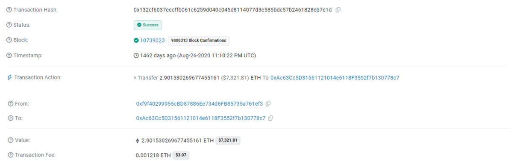
Figura 57 - Excerto de registro de transação no blockchain.
Os exploradores de blockchain permitem pesquisas por endereços, pelo hash da transação, pelo número do bloco, dentre outros critérios. Recentemente, o motor de busca Google passou a indexar os dados de transações das redes blockchain e a partir de então, é possível fazer pesquisas nesta ferramenta usando como critério de pesquisa o hash da transação ou o endereço público envolvido para descobrir a rede blockchain relacionada e, desta forma, usar um explorador de blockchain específico para a referida rede. Recomendamos que as eventuais explorações sejam efetuadas através dos seguintes exploradores: i. Blockchair.com; ii. https://blockchain.coinmarketcap.com/; iii. https://etherscan.io/ iv. http://www.blockchain.com/explorer (apesar do nome, este sítio eletrônico não é a blockchain, mas sim somente um explorador de blockchain) v. tronscan.org 3. Segurança Baseada em atributos como imutabilidade, distribuição, consenso de rede, criptografia e auditabilidade.
Desse modo, quanto mais antiga for a idade do bloco, mais próxima do impossível será sua alteração;
(PoW) e Proof of Stake (PoS);
ECDSA18 (Eliptic Curve Digital Signature Algorithm) usado para o
Bitcoin e Ethereum;
4. Anonimato relativo (pseudonimato)
As identidades dos usuários são representadas por endereços alfanuméricos, mas podem ser rastreadas por ferramentas de análise em determinados casos. O anonimato é dito relativo porque o fluxo de ativos entre diferentes endereços públicos pode ser rastreado e ferramentas de análise de blockchain podem mapear essas transações, identificando padrões e relacionando diferentes endereços e, ao cabo, revelando uma identidade. Ademais, quando os usuários compram ou vendem criptomoedas em PSAVs centralizadas, eles são geralmente obrigados a cumprir políticas de Conheça Seu Cliente (KYC), fornecendo informações de identificação pessoal. Se um endereço de ativo virtual usado em uma transação puder ser vinculado a um usuário que tenha passado por um processo de KYC, a identidade real do usuário pode ser revelada.
5. Abrangência global
Permite transações entre quaisquer localidades do mundo, caso haja acesso à internet.
6. Disponibilidade
Funciona ininterruptamente, 24 horas por dia, 7 dias por semana.
7. Diversidade
Existem diversas redes blockchain, cada uma com propósitos específicos e características técnicas próprias.
No contexto das investigações de crimes digitais e financeiros, algumas blockchains se destacam por sua relevância prática e pelo volume de operações nelas registradas. 18 Para saber mais acesse https://www.youtube.com/watch?v=6TI5YOpnrgI. Acessado em 28/08/2024.
Bitcoin (BTC)
Criada em 2009, a Bitcoin é a blockchain mais antiga e continua sendo uma das mais utilizadas em atividades criminosas. Seu foco principal está na transferência de ativos digitais, funcionando como um sistema descentralizado de pagamentos ponto a ponto. A rede, em regra, não suporta contratos inteligentes complexos. Pela sua ampla adoção global e pelo grande acervo histórico de transações, Bitcoin permanece como um dos principais alvos de análise em investigações forenses de blockchain.
Ethereum (ETH)
Lançada em 2015, a Ethereum ampliou o conceito de blockchain ao intro duzir contratos inteligentes, o que possibilitou a criação de tokens (ERC-20), NFTs (ERC-721 e ERC-1155) e um vasto ecossistema de aplicações de finanças descentralizadas (DeFi). Essas funcionalidades, embora tenham impulsionado a inovação tecnológica, abriram espaço para novas modalidades criminosas, como esquemas de rug pull19, pump and dump20 de tokens, uso de mixers (ex.: Tornado Cash) e lavagem de dinheiro por meio de exchanges descentralizadas (DEX). Por essa razão, Ethereum é considerada uma das blockchains mais complexas e críticas para investigações contemporâneas.
Tron (TRX)
A Tron segue uma arquitetura similar à do Ethereum, mas se diferencia por priorizar velocidade e baixas taxas de transação. Essa característica fez da rede o principal meio de circulação do stablecoin Tether (USDT), em sua versão TRC-20. Como o USDT é amplamente usado em operações comerciais legítimas e em fluxos ilícitos, a Tron ganhou enorme importância investigativa. Atualmente, é a blockchain mais utilizada para movimentações rápidas e de baixo custo de grandes volumes de recursos, o que a torna de altíssimo interesse para autoridades policiais e órgãos de controle, ao guardar relação com pagamentos ilícitos e lavagem de dinheiro em grande escala.
Para a análise investigativa em blockchain, exploradores públicos desempe 19 “Rug pull” é um tipo de golpe no universo cripto em que os desenvolvedores de um projeto, geralmente de forma repentina, retiram toda a liquidez ou abandonam o projeto, deixando os investidores com tokens sem valor. O termo faz alusão à expressão “pull the rug out from under someone” (“tirar o tapete debaixo dos pés”). 20 “Pump and dump” é uma prática fraudulenta em que o preço de um ativo, como uma criptomoeda ou ação de baixo valor, é artificialmente inflado (“pump”) por meio de promoção enganosa; em seguida, os organizadores vendem (“dump”) seus ativos no auge do preço, causando queda abrupta e prejuízo para os demais investidores. nham papel central, permitindo a visualização detalhada de transações, carteiras e contratos inteligentes. Entre os mais recomendados, destacam-se o Blockchair, que oferece consultas avançadas e suporte a múltiplas blockchains; o CoinMarketCap Explorer, integrado a uma das principais plataformas de informações de mercado de criptoativos, útil para contextualizar fluxos financeiros; o Etherscan, referência para investigações em Ethereum e seus tokens, com recursos de rastreamento de contratos inteligentes; o Blockchain.com Explorer, tradicional para acom panhamento de transações em Bitcoin e outras redes; e o Tronscan, ferramenta essencial para análise de movimentações na Tron, especialmente relevantes devido ao uso massivo do USDT (TRC-20). Esses exploradores são pontos de partida fundamentais para investigações, permitindo correlações entre endereços, identificação de padrões suspeitos e coleta de evidências digitais.
As arquiteturas das redes blockchain utilizam algoritmos decriptografia assimétricapara assegurar a integridade e a autenticidade das transações. Essa modalidade criptográfica, também conhecida comocriptografia de chave pública, difere da criptografia simétrica, na qual uma única chave é utilizada tanto para codificar quanto para decodificar informações.
Na criptografia assimétrica, utiliza-se um par de chaves matematicamente relacionadas:
O algoritmo amplamente adotado pelas principais redes blockchain é o ECDSA (Elliptic Curve Digital Signature Algorithm), que permite a geração de pares de chaves com elevada segurança e eficiência computacional. A chave pública é derivada matematicamente da chave privada, em uma relação unidirecional. Isso significa que, embora seja possível obter a chave pública a partir da chave privada, o inverso não é possível, garantindo a confidencialidade da chave privada.
No contexto dos ativos virtuais, o termo “endereço público” refere-se a uma representação simplificada da chave pública, obtida após a aplicação de funções de hash21. Trata-se de uma etiqueta alfanumérica que identifica a origem ou o destino de uma transação. É importante destacar que, embora os termos “chave 21 Não há criptografia envolvida na derivação do endereço a partir da chave pública, mas somente funções de hash, checksum e codificação (Base58, no caso do Bitcoin; Hexadecimal no caso do Ethereum, por exemplo). pública” e “endereço público” sejam frequentemente utilizados como sinônimos, tecnicamente são coisas distintas. O endereço público é derivado da chave pública e possui formato mais curto e amigável para uso operacional.
A seguir, apresentam-se exemplos de endereços públicos nas três principais redes blockchain:
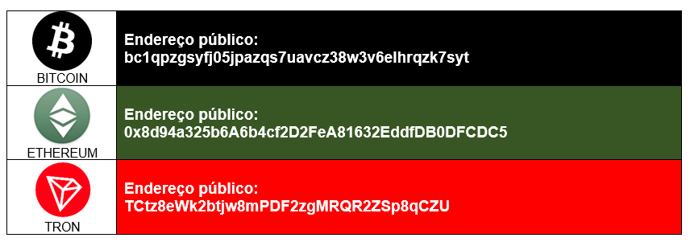
Figura 58 - Exemplos de endereços públicos das três principais blockchains de interesse
investigativo – Fonte: Manual de Apoio à Investigação de Criptoativos/DFIN/CGRC/Dicor/PF
O endereço público funciona de maneira análoga ao número de uma conta bancária. Para enviar ativos virtuais a um destinatário, é necessário conhecer seu endereço público, assim como se exige uma chave PIX em transações com moeda fiduciária. Não há problema, no que se refere à segurança, em divulgar o endereço público.
Achave privadaé o elemento crítico que confere controle total sobre os ativos vinculados a um determinado endereço. Ela funciona como uma senha de acesso à “conta” de ativos virtuais. Para realizar uma transação, o usuário deve possuir a chave privada correspondente ao endereço de origem dos ativos.
A chave privadanão deve ser compartilhadasob nenhuma hipótese. Sua exposição implica risco de perda total e irreversível dos ativos associados. O controle efetivo de um ativo virtual está diretamente vinculado à posse da chave privada correspondente ao endereço onde o ativo está armazenado. Esse conceito é fundamental para a compreensão dos procedimentos de apreensão, sequestro e recuperação de ativos virtuais no âmbito da investigação criminal.
Segue um exemplo de chave privada, chave pública e endereço:
| 🔐 Chave Privada (hexadecimal, 256 bits) | e9873d79c6d87dc0fb6a 5778633389dfa3d6a 4f7d8a3c1f9b3e4f2a3b1c2d3e4 |
|---|---|
| 🔓 Chave Pública (formato uncompressed, hexadecimal): | 04b0bd634234abbb1ba1e986e884185c 0458c8e0c9 a0f7e3c3f7e9a1b2c3d4e5f6a7b8c9d0e 1f2a3b4c5d6e7f8a9b0c1d2e3f4a5b6c 7d8e9f0 |
| 🏦 Endereço Bitcoin (Base58Check codificado): | 1PMycacnJaSqwwJqjawXBErnLsZ7RkXUAs |
No universo dos ativos virtuais, as exchanges desempenham papel fundamental ao possibilitar a compra, venda e troca de criptomoedas, funcionando como portas de entrada e saída para o ecossistema digital. Para fins de investigação policial, é essencial distinguir entre dois modelos principais de Provedores de Serviços de Ativos Virtuais (PSAV): as Exchanges Centralizadas (CEX) e as Exchanges Descentralizadas (DEX).
As Exchanges Centralizadas (CEX) são plataformas administradas por uma enti dade ou empresa que atua como intermediária entre compradores e vendedores. Nelas, os usuários precisam criar contas, submeter-se a processos de verificação de identidade (KYC/AML) e confiar seus fundos à custódia da própria exchange. Exemplos conhecidos incluem Binance, Coinbase, Mercado Bitcoin e Kraken. Do ponto de vista investigativo, esse tipo de exchange é relevante porque concentra grande volume de transações e, quando regulamentada, mantém registros que podem ser requisitados por autoridades, facilitando a rastreabilidade de fluxos financeiros ilícitos.
Por outro lado, as Exchanges Descentralizadas (DEX) operam de forma dis tribuída, sem intermediários, utilizando contratos inteligentes para permitir que os usuários negociem diretamente entre si (peer-to-peer). Em geral, não exigem cadastro, não realizam verificação de identidade e não custodiam fundos, sig nificando dizer que as carteiras permanecem sob controle exclusivo do usuário. Exemplos de DEX incluem Uniswap, PancakeSwap e dYdX. Para a investigação policial, as DEX apresentam desafios significativos, ao favorecerem o anonimato e possibilitarem operações de lavagem de dinheiro digital por meio de swaps instantâneos, mixers integrados ou troca de tokens em grande escala.
Em resumo, as CEX oferecem maior transparência e possibilidade de coo peração institucional, enquanto as DEX representam um ambiente de liberdade tecnológica que, embora inovador, dificulta a ação regulatória e a coleta de provas digitais.
As carteiras de ativos virtuais são ferramentas tecnológicas, em formato de software ou hardware, desenvolvidas para facilitar a gestão, operação e segurança dos ativos digitais. Por meio dessas carteiras, é possível:
A compreensão das características e classificações das carteiras é essencial para o policial federal, especialmente nas fases de investigação, apreensão e recuperação de ativos virtuais. A chave privada é o elemento que confere controle efetivo sobre os ativos virtuais. Assim, a forma como essa chave é armazenada define a classificação da carteira.
Uma Carteira de Custódia de Terceiros é aquela em que uma Prestadora de Serviços de Ativos Virtuais (PSAV) do tipo CEX mantém a guarda das chaves privadas do usuário. Isso significa que o controle direto sobre os ativos não está com o titular, mas sim com a instituição, que centraliza a gestão e a segurança.
O processo de abertura de conta em uma PSAV é similar ao de um banco digi tal: exige dados cadastrais, documentos e validações, permitindo posteriormente o envio de moeda fiduciária para compra de ativos virtuais. Nessa etapa, os valores transferidos para a PSAV ficam registrados de forma escritural, e o usuário passa a emitir ordens de conversão de seu saldo em moeda fiduciária em ativos virtuais.
Esse tipo de carteira tem implicações diretas para a atividade policial. O acesso à conta ocorre via login e senha (com ou sem autenticação em dois fatores), independentemente do dispositivo utilizado, mas o controle final sobre os ativos é da PSAV, já que o usuário não possui as chaves privadas. Isso significa que os fundos ficam sujeitos à liquidez e à segurança da instituição, podendo ser perdidos em caso de falência ou alegações de ataque cibernético. Além disso, a exigência de dados pessoais e cadastrais no processo de abertura de conta pode servir como fonte relevante de informações para investigações. O funcionamento típico desse modelo pode ser representado no fluxograma a seguir. 1 – Cliente realiza cadastro na CEX e se submete ao procedimento KYC (conheça seu cliente); 1.1 – No momento da criação do cadastro, a CEX cria uma carteira de DEPÓSITO para o cliente que servirá somente para recebimento de criptoativos. Essa carteira não servirá para envio de criptoativos para terceiros; 2 – Cliente pode transferir moeda fiduciária (R$) para a CEX. Essa operação sairá da conta bancária do cliente para a conta bancária da CEX; 2.1 – O crédito em R$ é registrado de forma escritural pela CEX como atribuído ao cliente; 3 – Cliente emite uma ordem de compra de Cripto para a CEX. OU seja, o cliente deseja trocar R$ por Cripto; 3.1 – A CEX faz dois registros: débito em R$ da conta do cliente e crédito em Cripto na conta do cliente. Note que o Cripto adquirido não é, de fato, Criptoativo, mas tão somente um saldo que o representa (saldo representativo). 4 – Cliente emite uma ordem para a CEX de transferência de Cripto para um terceiro (PESSOA 2); 4.1 – A CEX faz um registro: débito em Cripto da conta do cliente. 4.2 – A CEX transfere o Criptoativo (de fato) de uma das suas dezenas de carteiras para a carteira do terceiro. Note-se que houve necessidade de transferência de Criptoativo (de fato) porque o terceiro não era cliente da CEX. Caso fosse cliente, a CEX somente faria um registro escritural do saldo representativo, a débito de um e a crédito de outro (conforme próximo passo). 5 – Cliente emite uma ordem para a CEX de transferência de cripto para outro terceiro (PESSOA 3); 5.1 – A CEX faz um registro: débito em Cripto (saldo representativo) da conta do cliente e crédito em Cripto (saldo representativo) da conta do terceiro (PESSOA 3). Note-se que neste caso não houve necessidade de transferência de Criptoativo (de fato), pois a PESSOA 3 também é cliente desta CEX. Por esse motivo, a CEX somente registra o débito e o crédito.
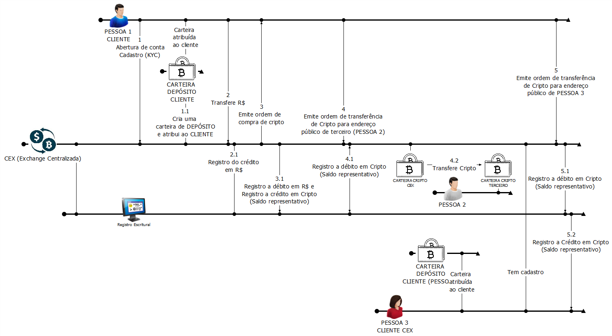
Figura 59 - Diagrama de possíveis operações com criptoativos.
Do ponto de vista investigativo, o uso de uma PSAV do tipo CEX apresenta características relevantes: a instituição concentra os dados cadastrais do usuário, o que pode auxiliar na identificação em processos criminais; o acesso à conta ocorre por meio de login e senha, podendo incluir autenticação em dois fatores, o que permite rastrear dispositivos e credenciais utilizadas; os ativos virtuais ficam sob total controle da PSAV, e não do usuário, centralizando as operações em um único ponto; e, por fim, a dependência da solidez financeira e da segurança da prestadora implica que, em casos de falência ou de ataque cibernético, o usuário pode perder o acesso aos seus ativos, situação que deve ser considerada em análises policiais e judiciais.
As Carteiras de Custódia Própria diferenciam-se por conceder ao usuário controle total sobre suas chaves privadas e, consequentemente, sobre seus ativos virtuais. Nessa modalidade, o próprio titular é responsável por armazenar e gerenciar suas chaves, podendo fazê-lo por meio de hardwallets (dispositivos físicos projetados para segurança, como Trezor e Ledger) ou de softwares instalados em computadores e dispositivos móveis, tais como a Trust Wallet ou Exodus Wallet.
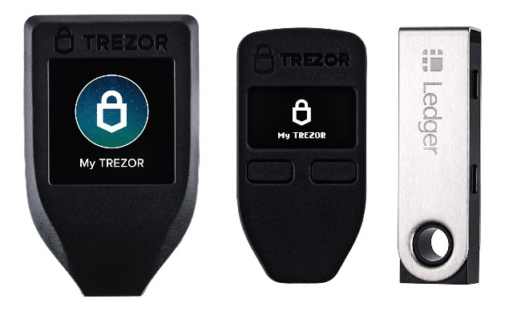
Figura 60 - Hardwallets mais populares do mercado;
à esquerda e no centro, a Trezor, à direita a Ledger.
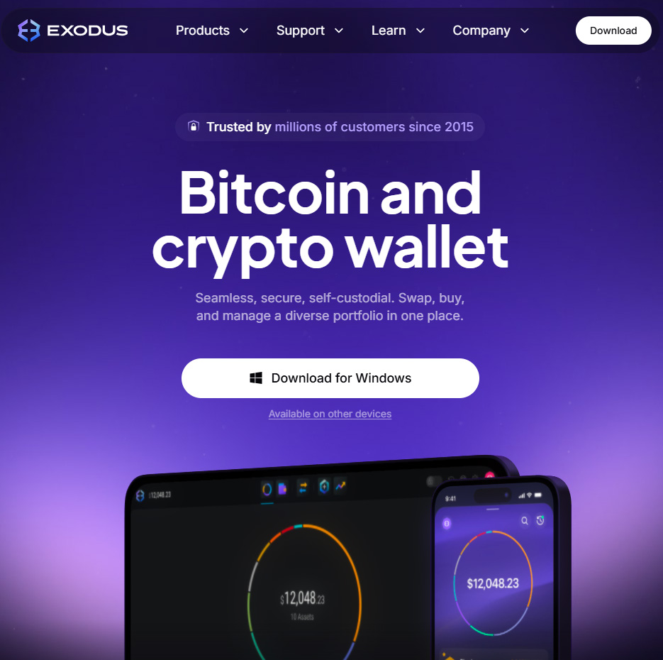
Figura 61 -Excerto do sítio da Exodus Wallet.
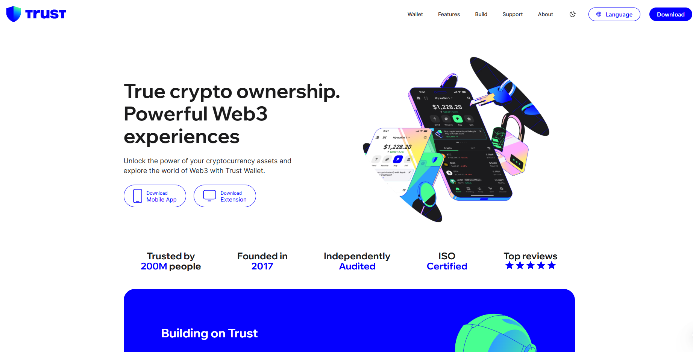
Figura 62 - Excerto do sítio da Trust Wallet.
Enquanto as hardwallets funcionam conectadas a um computador e permitem operações por meio de interfaces específicas, as carteiras em formato de software operam como aplicativos comuns, acessíveis diretamente pelo dispositivo em que foram instaladas.
Do ponto de vista policial, esse tipo de carteira apresenta peculiaridades importantes: sua criação não exige fornecimento de dados pessoais, dificultando a identificação do usuário; o acesso pode ser protegido por senha, PIN e autenti cação multifator; e as chaves privadas ficam armazenadas no próprio dispositivo. Assim, a perda da senha, do PIN ou do equipamento compromete o acesso aos ativos, salvo se o usuário possuir a Frase Secreta, mecanismo de backup essencial nesse modelo. Essa característica reforça a necessidade de atenção investigativa, pois a custódia própria elimina intermediários e centraliza a responsabilidade no indivíduo.
A Frase Secreta (Seed Phrase ou Frase de Recuperação) é o principal mecanismo de backup de uma Carteira de Custódia Própria, ao permitir recuperar o acesso integral aos ativos mesmo após perda, roubo ou falha do dispositivo.
Trata-se de uma sequência de 12, 18 ou 24 palavras aleatórias, geradas a partir de um vocabulário pré-definido, cuja ordem deve ser rigorosamente preservada. Essa frase contém, em essência, todo o poder de acesso à carteira: a partir dela, é possível derivar todas as chaves privadas e públicas associadas. Por essa razão, o investigador que obtiver uma Frase Secreta terá acesso completo aos ativos da carteira, podendo controlá-los tal como o proprietário original.
A Frase Secreta é fornecida no momento da criação da carteira, e o usu ário deve anotá-la em local seguro, visto que qualquer inversão ou alteração compromete sua função. O processo de recuperação é simples: basta escolher a carteira, selecionar a opção de recuperação e inserir a sequência correta. Como uma mesma carteira pode ser restaurada indefinidamente em diferentes dispositivos, uma Frase Secreta pode ser compartilhada entre vários indivíduos, inclusive membros de organizações criminosas, representando risco adicional para a investigação policial.
Seed hipotética (exemplo didático) : garden brave leopard cube harbor music fossil valid turtle maple borrow swing nation zoo velvet chest orange flame glove comic tiger dolphin wisdom metal
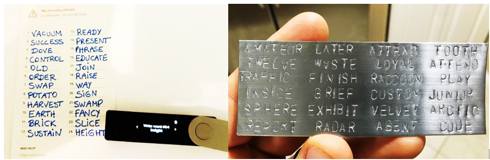
Figura 63 - Exemplos de Frases Secretas anotadas em papel e em uma placa metálica –
Fonte: Manual de Apoio à Investigação de Criptoativos/DFIN/CGRC/Dicor/PF
O processo de transferência de ativos virtuais pode ser tecnicamente complexo, mas para fins práticos e investigativos pode ser compreendido em três etapas prin cipais: montagem da transação, transmissão para a rede e registro na blockchain.
Na montagem, o usuário utiliza uma carteira digital para definir o tipo de ativo, o endereço de destino, o valor e a taxa de rede. Após configurada, a transação é assinada com a chave privada, normalmente de forma simplificada por PIN ou senha. Em seguida, ocorre a transmissão, quando a transação assinada é enviada para a rede de computadores (nós) que compõem a blockchain e circular entre eles. Por fim, no registro na blockchain, os nós validam se o remetente possui saldo suficiente e se a assinatura é legítima; então, a transação é incluída em um bloco e considerada confirmada. Esse fluxo, descentralizado e transparente, garante segurança e rastreabilidade, aspectos essenciais tanto para o usuário quanto para o investigador policial.
O marco regulatório dos ativos virtuais no Brasil é recente e ainda está em consolidação. Ao nível internacional, o ponto de partida foi a alteração da Recomendação 15 do GAFI (2018), que passou a exigir a regulamentação das prestadoras de serviços de ativos virtuais (PSAV’s) para fins de combate à lavagem de dinheiro e financiamento ao terrorismo.
No Brasil, o primeiro movimento normativo relevante foi a Instrução Normativa 1.888/2019 da Receita Federal, que obrigou a prestação de informações sobre operações com ativos virtuais. Posteriormente, a CVM, por meio do Parecer de Orientação nº 40/2022, definiu que determinados tokens podem ser enquadrados como valores mobiliários, dependendo de sua natureza e forma de oferta.
O passo mais significativo ocorreu com a Lei 14.478/2022, em vigor desde junho de 2023, que estabeleceu diretrizes para a prestação de serviços de ativos virtuais, enquadrou as PSAVs como instituições financeiras para fins penais, alterou a Lei de Lavagem de Dinheiro (Lei 9.613/98), a Lei de Crimes Financeiros (Lei 7.492/86) e incluiu o tipo penal de fraude (estelionato) com ativos virtuais (art. 171-A, CP). O Decreto 11.563/2023 designou o Banco Central como órgão regulador, e novas medidas vêm sendo implementadas, incluindo consultas públicas e regras para stablecoins. Mais recentemente, outras normas complementares ampliaram a regulação: Soluções de Consulta da RFB (217/2023 e 218/2023), que trataram de NFTs e utility tokens; a Lei 14.754/2023, que incluiu os ativos virtuais como aplicações financeiras no exterior sujeitas ao IRPF; e a IN RFB 2.219/2024, que ampliou a obrigação de reporte de operações envolvendo PSAVs estrangeiras. Esse conjunto normativo compõe hoje a base legal e infralegal que orienta tanto o mercado quanto a atuação policial em investigações envolvendo ativos virtuais. Mais recentemente, a legislação brasileira referente ao assunto, ganhou contornos mais concretos com as regulamentações expedidas pelo Banco Central, a saber:
Disciplina os processos de autorização relacionados ao funciona mento das sociedades corretoras de câmbio, das sociedades corre toras de títulos e valores mobiliários, das sociedades distribuidoras de títulos e valores mobiliários e das sociedades prestadoras de serviços de ativos virtuais.
Disciplina a constituição e o funcionamento das sociedades pres tadoras de serviços de ativos virtuais e a prestação de serviços de ativos virtuais por outras instituições autorizadas a funcionar pelo Banco Central do Brasil;
BCB nº 278, de 31 de dezembro de 2022, e a Resolução BCB nº 279, de 31 de dezembro de 2022, que regulamentam a Lei nº 14.286, de 29 de dezembro de 2021, para regulamentar o disposto no art. 7º,caput, inciso V, da Lei nº 14.478, de 21 de dezembro de 2022, combinado com o art. 1º do Decreto nº 11.563, de 13 de junho de 2023, a fim de incluir atividades ou operações das prestadoras de serviços de ativos virtuais no mercado de câmbio
e dispor sobre as situações sujeitas à regulamentação de capitais
brasileiros no exterior e capitais estrangeiros no país.
DE 2025: Estabelece os procedimentos para a remessa ao Banco
Central do Brasil de informações relativas à prestação de serviços
de ativos virtuais no mercado de câmbio de que trata a Resolução
BCB nº 521, de 10 de novembro de 2025.
Como dito, a Lei 14.478/2022 institui o marco regulatório dos criptoativos no Brasil e define conceitos fundamentais para a atuação policial. Ela estabelece que ativo virtual é qualquer representação digital de valor negociável ou transferível por meios eletrônicos, utilizada para pagamento ou investimento, excluindo moedas nacionais ou estrangeiras, moedas eletrônicas, programas de fidelidade e ativos financeiros já regulados. Essa definição é essencial para diferenciar operações legítimas de práticas ilícitas.
Outro ponto central é a obrigatoriedade de autorização prévia para prestadoras de serviços com ativos virtuais (PSAVs), como exchanges, que só podem operar mediante aprovação do Banco Central.
A lei também delimita competências regulatórias: o Banco Central supervisiona operações que não envolvam valores mobiliários, enquanto a CVM regula tokens que funcionem como tais, conforme sua natureza econômica.
De acordo com essa lei, as PSAVs devem atender a requisitos rigorosos, incluindo capital mínimo, estrutura societária formal, administradores com reputação ilibada, políticas de governança e compliance, prevenção à lavagem de dinheiro e financiamento do terrorismo, auditoria independente e controles de segurança cibernética. Há também regras específicas para operações com stablecoins, especialmente em câmbio internacional, impondo restrições para evitar evasão cambial e lavagem de dinheiro.
No âmbito penal, a Lei 14.478/2022 incluiu no Código Penal o art. 171A, que tipificou o “criptoestelionato”: organizar, gerir, ofertar ou intermediar operações envolvendo ativos virtuais, valores mobiliários ou financeiros, com o propósito de obter vantagem ilícita, enganando alguém por meio de artifício ou fraude, com pena de reclusão de 4 a 8 anos, além de multa.
Também inseriu nas Leis de Crimes Financeiros (Lei 7.492/86) as prestadoras de serviços de ativos virtuais (PSAVs) como pessoas jurídicas sujeitas à responsa bilização por crimes contra o sistema financeiro nacional, equiparando-as a uma instituição financeira.
Por fim, alterou a Lei de Lavagem de Dinheiro (Lei 9.613/98), prevendo aumento de pena de 1/3 a 2/3 caso o crime seja praticado por meio de ativo virtual, reiteração ou organização criminosa.
Também exigiu que PSAVs mantenham registro de todas as transações, inclusive em criptoativos, acima dos limites definidos, e as insere no rol de sujeitos obrigados à prevenção e reporte de operações suspeitas
O Decreto nº 11.563, de 13 de junho de 2023, regulamenta a Lei 14.478/2022 e atribui ao Banco Central do Brasil (BCB) a competência exclusiva para regu lamentar, autorizar e supervisionar as prestadoras de serviços de ativos virtuais (PSAVs), em consonância com as diretrizes da lei, incluindo a autorização de funcionamento, transferência de controle, fusão, cisão, incorporação e definição de requisitos para cargos administrativos dessas entidades.
Além disso, o decreto estabelece que esse regime regulatório não se aplica aos ativos que representem valores mobiliários sujeitos à regulação da Comissão de Valores Mobiliários (CVM), reforçando que a CVM mantém sua competência original sobre tokens considerados valores mobiliários, e assegura que a atuação das PSAVs nas atividades de câmbio e transfêrencia de ativos virtuais seja supervi sionada pelo BCB, sem prejuízo das atribuições da CVM, do Sistema Nacional de Defesa do Consumidor e das instituições responsáveis pela repressão aos crimes previstos na Lei de Criptoativos.
O decreto entrou em vigor em junho de 2023, marcando o início do processo formal de regulamentação e supervisão do mercado de criptoativos pelo BCB no Brasil.
A Resolução BCB nº 519, de 10 de novembro de 2025, estabelece os critérios e procedimentos para autorização e supervisão de instituições financeiras e pres tadoras de serviços de ativos virtuais (PSAVs) no Brasil, abrangendo sociedades corretoras de câmbio, corretoras e distribuidoras de valores mobiliários, além das SPSAVs.
Essa norma exige que os controladores demonstrem capacidade econômi cofinanceira compatível com operações e contingências, comprovem a origem lícita do capital, apresentem plano de viabilidade econômica, infraestrutura de TI robusta e governança corporativa adequada.
Também impõe reputação ilibada e qualificação técnica dos administradores, cumprimento de requisitos mínimos de capital e patrimônio e fixação de sede física no país.
O regulamento consolida o arcabouço prudencial do Banco Central, harmonizando a entrada das PSAVs no sistema de autorização com instituições tradicionais, reforçando a segurança jurídica e operacional do mercado de criptoativos brasileiro.
A Resolução BCB nº 520, complementa a regulamentação das PSAVs ao detalhar os requisitos prudenciais e operacionais para mitigação de riscos. Ela define parâmetros para gestão de riscos tecnológicos e cibernéticos, exigindo planos robustos de continuidade de negócios, testes periódicos de segurança e mecanismos para proteção de chaves privadas e ativos custodiados.
Além disso, estabelece regras para prevenção à lavagem de dinheiro e financiamento do terrorismo, impondo políticas internas compatíveis com padrões internacionais, monitoramento contínuo de transações e reporte obriga tório de operações suspeitas ao Banco Central e ao Coaf.
A norma também disciplina a segregação de recursos dos clientes, garantindo que ativos virtuais e valores em moeda corrente não se confundam com patri mônio próprio da PSAV, e impõe auditoria independente anual para verificação da conformidade.
A Resolução BCB nº 521, trata especificamente das regras de capital prudencial e estrutura financeira das prestadoras de serviços de ativos virtuais (PSAVs). Ela estabelece os níveis mínimos de patrimônio líquido e capital regulatório que variam conforme o porte e a complexidade das operações, além de prever mecanismos de colchão de liquidez para absorção de choques e garantir a solvência das instituições.
A norma também define critérios para cálculo do capital baseado em risco, incluindo exposição a ativos voláteis, operações internacionais e custódia de criptoativos, impondo limites para concentração e exigindo planos de contingência.
Outro ponto relevante é a obrigação de reportar periodicamente ao Banco Central indicadores de risco, estrutura de capital e demonstrações financeiras auditadas, assegurando transparência e supervisão contínua.
A Resolução BCB nº 521 também aborda aspectos relacionados às operações de câmbio com criptoativos. O texto prevê que as PSAVs que realizem operações internacionais envolvendo ativos virtuais devem seguir as regras do mercado de câmbio brasileiro, incluindo:
Segregação de recursos: valores em moeda corrente e ativos virtuais dos clientes não podem se misturar com o patrimônio próprio da PSAV, inclusive em operações de câmbio.
Controle e reporte: as PSAVs devem manter registros detalhados das operações internacionais com criptoativos e reportar ao Banco Central, conforme normas complementares (como a Instrução Normativa BCB nº 693/2025).
Compliance cambial: exige que as operações respeitem limites regulatórios e procedimentos de identificação do cliente, mitigando riscos de evasão cambial e lavagem de dinheiro.
A Instrução Normativa BCB nº 693, de 19 de dezembro de 2025, regulamenta o envio obrigatório de informações sobre operações de câmbio envolvendo criptoativos ao Banco Central.
Essa norma determina que, a partir de maio de 2026, instituições autorizadas e prestadoras de serviços de ativos virtuais (PSAVs) devem reportar dados deta lhados sobre transações internacionais com criptoativos, incluindo pagamentos, transferências para carteiras autocustodiadas, carregamento ou descarregamento em cartões internacionais e o total mensal de compras, vendas e trocas de ativos referenciados em moeda fiduciária.
O reporte deve conter identificação do cliente, tipo e quantidade de cripto ativos, data da operação e ser realizado via Sisbacen, utilizando o documento C212 (ACAM212).
A norma também exige que PSAVs já ativas se cadastrem no sistema e solici tem os serviços necessários para cumprir essa obrigação. O objetivo é garantir rastreabilidade, transparência e controle sobre fluxos cambiais com criptoativos, fortalecendo a prevenção à lavagem de dinheiro, evasão cambial e financiamento ilícito.
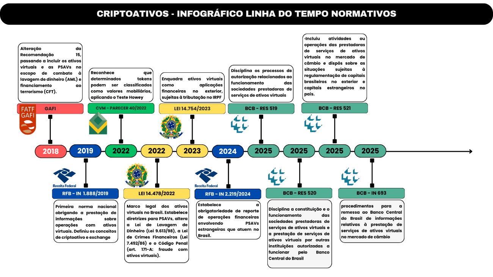
Figura 64 - Principais marcos regulatórios.
Para compreender adequadamente este tema, é fundamental distinguir entre Ativos Virtuais e Saldos Representativos de Ativos Virtuais. Os primeiros correspondem à propriedade digital em si, criada e movimentada diretamente na blockchain. Podem assumir a forma de criptomoedas, tokens de utilidade, tokens de segurança ou NFTs, sendo negociados e transferidos eletronicamente como forma de pagamento, investimento ou utilidade em redes específicas. Já o saldo representativo é somente um registro escritural mantido por uma instituição intermediária, como uma PSAV do tipo CEX, em nome do usuário. Nesse caso, o que o usuário possui não é o ativo em si, mas um crédito equivalente, semelhante ao saldo que aparece em um extrato bancário referente à moeda fiduciária.
Essa diferenciação é essencial para o trabalho policial, pois o saldo repre sentativo não garante posse efetiva do ativo virtual. Plataformas como a Binance, por exemplo, registram internamente que o usuário possui determinado valor em criptomoeda, mas até que haja a transferência desse saldo para uma carteira pessoal na blockchain, o usuário não detém de fato os ativos. Em caso de falên cia da instituição, esse saldo pode se tornar irrecuperável, assim como ocorre com créditos em bancos ou milhas de companhias aéreas. Para o investigador, reconhecer essa distinção permite identificar se o investigado realmente possui ativos virtuais sob sua custódia ou somente créditos representativos registrados por terceiros, o que impacta diretamente a forma de rastreamento e apreensão em investigações criminais.
Concluída essa diferenciação, é possível avançar para a apresentação das principais técnicas aplicáveis em investigações criminais envolvendo ativos virtuais ou saldos representativos.
Essas tarefas não seguem, necessariamente, uma ordem fixa e, em deter minados casos, podem até ser dispensadas. Compete ao investigador avaliar o contexto e adaptar os elementos mais pertinentes de cada etapa à realidade do caso concreto, de modo a assegurar a máxima eficiência e alcançar os melhores resultados na investigação.
Figura 65 - Etapas investigativas – Fonte: Manual de Apoio à Investigação de Criptoativos/
DFIN/CGRC/Dicor/PF
A atividade de identificação envolve tanto o aspecto de identificar indícios de uso de ativos ou saldos como também identificar a espécie do ativo utilizado.
A primeira tarefa investigativa consiste em identificar indícios do uso de ativos virtuais ou de saldos representativos por parte do investigado. Essa identificação pode ocorrer de forma direta, em casos em que já existem provas ou notícias -crime que apontem o uso desses ativos, ou de maneira indireta, quando surgem somente suspeitas iniciais que exigem aprofundamento.
Para tanto, o policial pode recorrer a diferentes meios:
Relatórios de Inteligência Financeira (RIF), o policial deve observar
atentamente o campo “Informações Adicionais” em busca de termos
ligados a ativos virtuais, como criptoativos, corretora, bitcoin, digital,
entre outros. Esses indícios geralmente apontam para a existência
de saldos representativos em PSAVs, e não necessariamente para a
posse direta de ativos virtuais em endereços públicos da blockchain.
Exemplos:
“Cliente de Cuiabá MT. Consta ser motorista co RENDA de R$ 5.000,00. No período de 2 meses movimentou R$ 345.656,08 a CRÉDITO e R$ 345.625,76 a DÉBITO com destaque para TED de terceiros e enviadas a uma corretora de ativos virtuais. Movimentação incompatível com a RENDAcadastrada. Principais CRÉDITOs: (...). Principais DÉBITOs: R$ 330.340,52 - XXXXXXX SERVICOS DIGITAIS LTDA, CNPJ AAAAAAAAAAAAAA - Caixa Econômica Federal, 2 TEDs. KYC (Gerente): “Cliente tem dificuldade em relatar aORIGEM do recurso, e a forma de investimentos.”.
Cliente de Curitiba PR. Consta ser Administrador com RENDA de R$ 18.236,00. No período de 3 meses movimentou R$ 828.120,76 a CRÉDITO e R$ 835.010,49 aDÉBITO, com destaque para 88 TED de/para diversos tercei ros, PF e PJ, incluindo pessoas de outros Estados e corretoras de ativos virtuais. Movimentação incompatível com a RENDAcadastrada. Principais CRÉDITOs: R$ 177.333,33 - XXXXXXX SERVICOS DIGITAIS S/A, CNPJ AAAAAAAAAAAAAA, 2 TEDs. R$ 146.052,33 - MERCADO BITCOIN SERVICOS DIGITAIS LTDA, CNPJ 18213434000135.”
“Exchange de Criptomoedas”, que aponta automaticamente
se o investigado transacionou com PSAVs listadas no sistema.
Isso permite indicar a existência de um possível saldo repre
sentativo de ativos virtuais, embora somente a própria PSAV
possa confirmar se tais valores foram efetivamente convertidos em
ativos virtuais na blockchain.
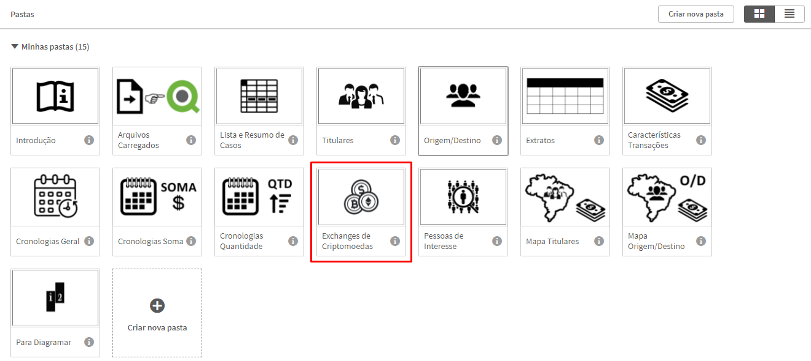
Figura 66 - Excerto da tela da aplicação Ciaf-Bancário – Fonte: Manual de Apoio à Investigação
de Criptoativos/DFIN/CGRC/Dicor/PF
2.219/2024): a Receita Federal do Brasil (RFB) coleta dados de transações de ativos virtuais tanto de pessoas físicas quanto de PSAVs. Após o deferimento do pedido de afastamento do sigilo fiscal do investigado, a Receita Federal poderá fornecer uma ampla variedade de dados relativos ao mercado de ativos virtuais e que, não raras às vezes, serão de interesse dos investigadores.
Drive ou OneDrive, os arquivos poderão ser acessados, ampliando as possibilidades de identificação. A seguir são apresentados arquivos digitais encontrados em caixas de e-mail e nuvens, com preservação da identidade do investigado. Exemplos:
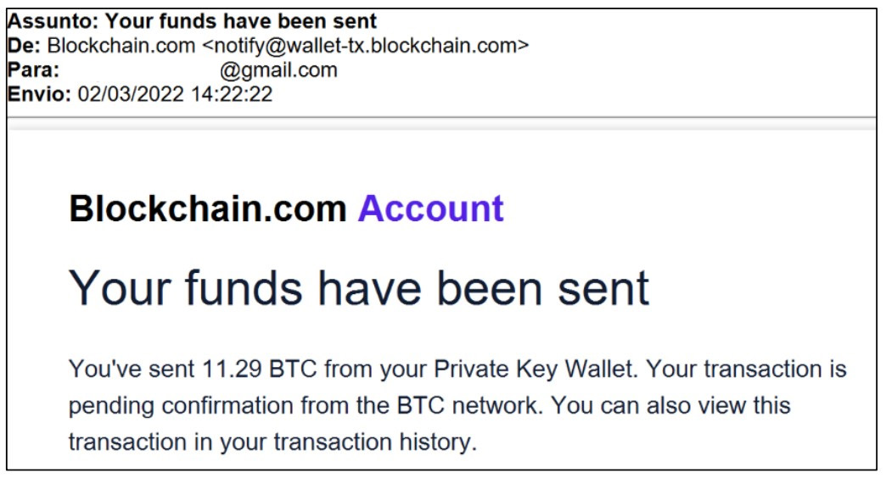
Figura 67 - Exemplo de indício de uso de criptoativos no email.
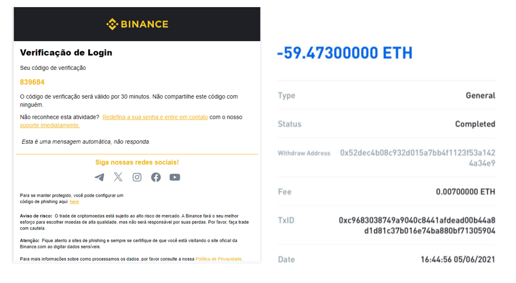
Figura 68 - Exemplo de indício de uso de criptoativos na nuvem.
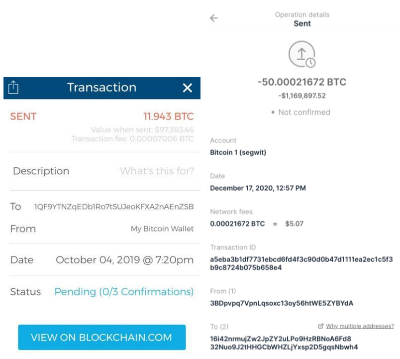
Figura 69 - Exemplo de indício de uso de criptoativos na nuvem.
Exemplos:
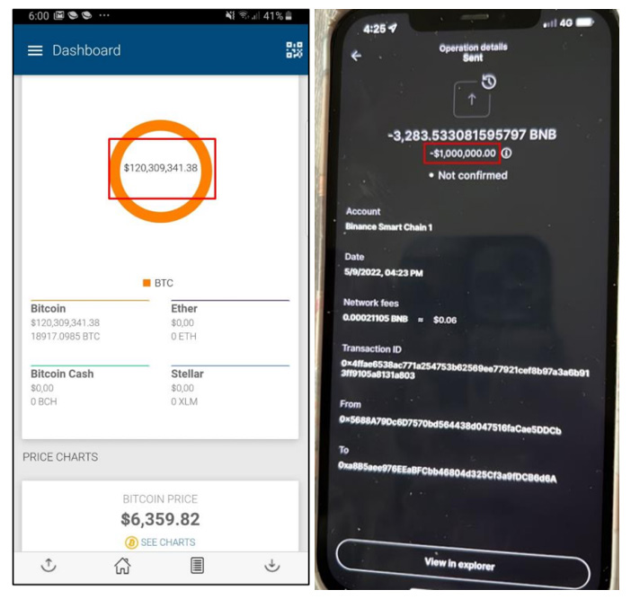
Figura 70 - Exemplo de indício de uso de criptoativos no material
apreendido – celular.
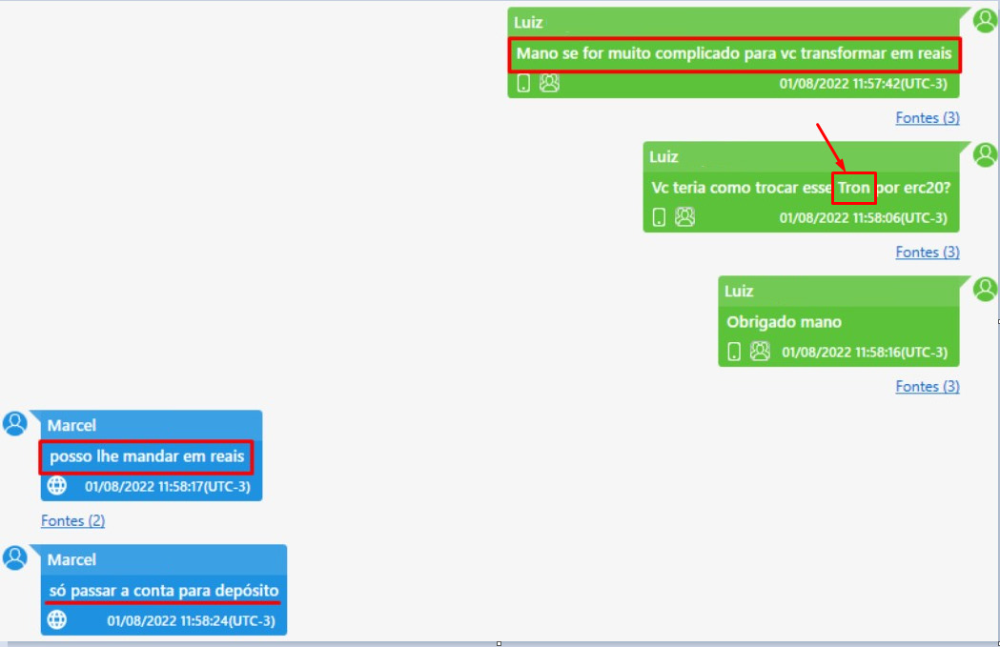
Figura 71 - Exemplo de indício de uso de criptoativos no material apreendido – chat
de Whatsapp.
Requisições às PSAVs de informações cadastrais do investigado, como nome, documentos, telefone, e-mail e endereços de ativos virtuais: o investi gador poderá obter informações cadastrais dos alvos investigados caso eles possuam relacionamento com a empresa. Geralmente, as PSAVs informam: nome completo, número telefônico, endereço de e-mail vinculado, data de nascimento, CPF, passaporte, e os endereços de ativos virtuais. A seguir, exemplos de cadastros da Binance e do Mercado Bitcoin.
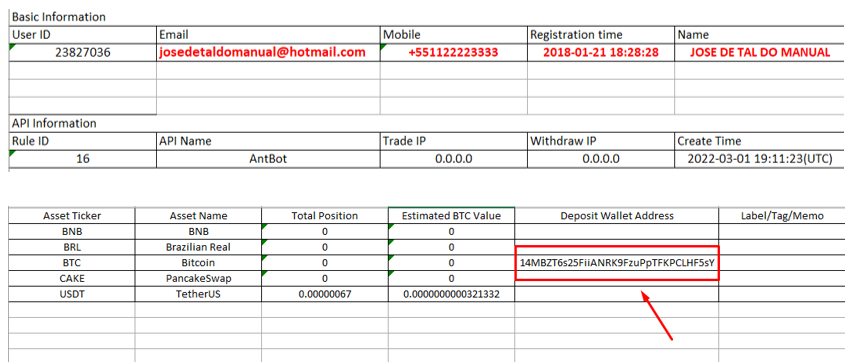
Figura 72 - Exemplo de indício de uso de criptoativos – resposta da PSAV – dados cadastrais –
Fonte: Manual de Apoio à Investigação de Criptoativos/DFIN/CGRC/Dicor/PF
O fluxograma a seguir indica as principais fontes de obtenção de informações.
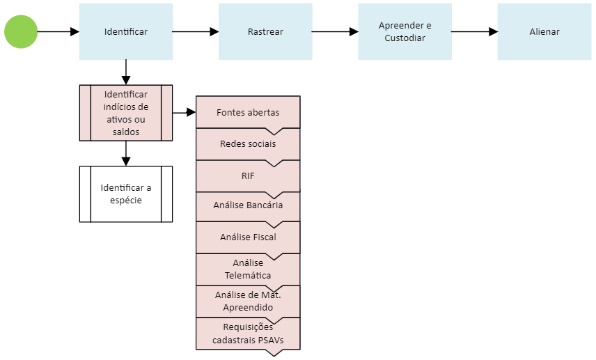
Figura 73 - Principais fontes de informação – Fonte: Manual de Apoio à Investigação de Criptoativos/
DFIN/CGRC/Dicor/PF
É importante ainda identificar qual espécie de criptoativo está relacionada
ao investigado. Para descobrir qual a espécie, necessitamos ao menos de uma
dessas referências:
Endereços públicos de diferentes blockchains têm formatos específicos. Apenas
ao analisar o formato, já seria possível identificar a qual rede o endereço pertence
e, consequentemente, qual ativo virtual pode estar sendo utilizado. Segue tabela
com alguns dos padrões:
Tabela 1 - Padrões de endereços conforme o ativo virtual ou blockchain
Dicor/PF
| Ativo Virtual | Formato de endereço público | Exemplo de endereço público |
|---|---|---|
| Bitcoin (BTC) | Legacy (P2PKH), começa com “1” | 1A1zP1eP5QGefi2DMPTfTL5SLmv7DivfNa |
| Bitcoin (BTC) | SegWit (P2SH), começa com “3” | 3J98t1WpEZ73CNmQviecrnyiWrnqRhWNLy |
| Bitcoin (BTC) | Bech32 (Native SegWit), começa com “bc1” | bc1qar0srrr7xfkvy5l643lydnw9re59gtzzwf8txh |
| Ethereum (ETH) | Começa com “0x” | 0xde0B295669a9FD93d5F28D9Ec85E40f4cb697Bae |
| Litecoin (LTC) | Legacy (P2PKH), começa com “L” | LZVjx63zLqBppDcNoRZZsXzAq9czKegKsn |
| Litecoin (LTC) | SegWit (P2SH), começa com “M” | MQMcJhpWHYVeQArcZR3sBgyPZxxRygs7vT |
| Litecoin (LTC) | Bech32 (Native SegWit), começa com “ltc1” | ltc1qar0srrr7xfkvy5l643lydnw9re59gtzzwf8txh |
| Ripple (XRP) | Começa com “r” | rEb8TK3gBgk5auZkwc6sHnwrGVJH8DuaLh |
| Bitcoin Cash (BCH) | Legacy, começa com “1” ou “3” | 1BpEi6DfDAUFd7GtittLSdBeYJvcoaVggu |
| Bitcoin Cash (BCH) | CashAddr, começa com “q” ou “p” | qpm2qsznhks23z7629mms6s4cwef74vcwvy22gdx6a |
| Cardano (ADA) | Começa com “addr” | addr1q9xlwqf6hl0j5g9fh3pgw4tnxu5h9n5l9n4uvmf ppwz4mfgsm4qdq7aztg2fhxj0k |
| Binance Coin (BNB) (BEP-2) | Começa com “bnb” | bnb1grpf0955h0yk8usrnvzp4eq4gzuwvps7e5u8pe |
| Binance Smart Chain (BSC) (BEP-20) | Igual ao Ethereum, começa com “0x” | 0xde0B295669a9FD93d5F28D9Ec85E40f4cb697Bae |
| Monero (XMR) | Começa com “4” ou “8” | 48Y4q3DsYKjHoafD9g7oNKnZ9PYWDpgYTGJMiHUgmkBb YhTnYZkVzRXYbRoDpgV7G2XsiNtQFwD2pkM3RSBFCrdC jx1FJ5 |
| Dash (DASH) | Começa com “X” ou “7” | XxXxC6tptWAqkWoZunxPqXU6Zxxmgxro |
| Ativo Virtual | Formato de endereço público | Exemplo de endereço público |
|---|---|---|
| Zcash (ZEC) | Transparent Address (t-addr), começa com “t1” ou “t3” | t1RyvYvZP8Gt5fXzUE8AHuB9xNgtRa8MoC |
| Zcash (ZEC) | Shielded Address (z-addr), começa com “zs” | zs1m3pm5e42dn0zwpw50xz0xs2xsvjx40dz63t jhhrlpvayq5z8mrhs3fplr6gs0qd |
| Polkadot (DOT) | Começa com “1” | 1zugcCF9WLfN3vxQGHq1w4EHk7PjL35XkqC4FGiEkA |
| Stellar (XLM) | Começa com “G” | GBRPYHIL2C5SXI2RJKH4NBDFYA5JDJYE4RB5 WJAKI5SAI2FZTTVGTLTG |
| Tron (TRX) | Começa com “T” | TJRy4Psh4prK1ysus7zBkoP9NxxTibzYwb |
| VeChain (VET) | Começa com “0x” | 0xdceaf1652a131F32a821468Dc03A92df0edd86Ea |
| Dogecoin (DOGE) | Começa com “D” | D8B7xsQBTzcqFz3FgoD9YpDoEugzQHBsV4 |
| Solana (SOL) | Comprimento variável (geral mente 32 ou 44 caracteres) | 5gPhzVBD6CxrEgKQxQLu5RAuYxnS2Jkrt89qPgsKQwaU |
Além da identificação da espécie de ativo virtual por meio da análise do padrão de formatação do endereço, é possível empregar ferramentas como exploradores de blockchain e até mesmo mecanismos de busca como o Google para essa finalidade. De fato, o Google passou a indexar endereços públicos de ativos virtuais, permitindo que, ao inserir um endereço no campo de pesquisa, sejam exibidas as blockchains às quais ele está vinculado, facilitando a sua classificação.
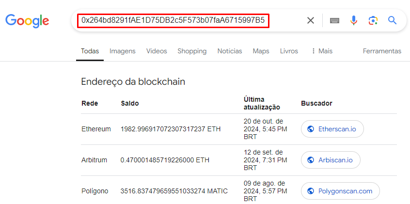
Figura 74 - Exemplo de pesquisa de endereço público no Google.
Também é possível utilizar exploradores de blockchain, já mencionados anteriormente, que funcionam como motores de busca especializados, capazes de identificar a espécie de ativo virtual associada a um determinado endereço. Entre os mais utilizados, destacam-se: Etherscan.io, voltado para ativos na rede Ethereum; Blockchain.com, para endereços vinculados ao Bitcoin; e Tronscan. org, específico para a blockchain Tron.
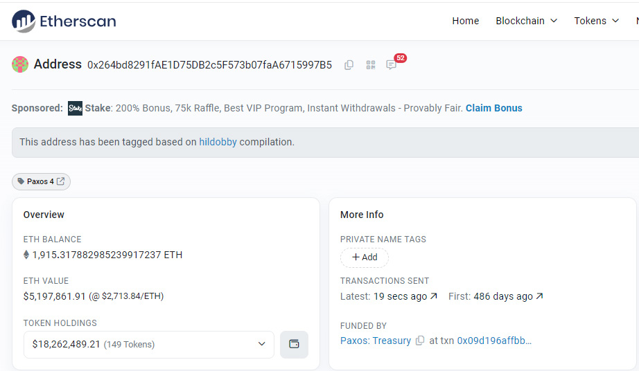
Figura 75 - Pesquisa de endereço público no explorador Etherscan – Fonte: Manual de
Apoio à Investigação de Criptoativos/DFIN/CGRC/Dicor/PF
A análise de dispositivos apreendidos, especialmente celulares, tem revelado o uso recorrente do termo USDT, referente ao token Tether, uma stablecoin atrelada ao dólar americano. O USDT é emitido em diversas blockchains, como Ethereum (ERC-20), Tron (TRC-20) e Binance Smart Chain (BEP-20), o que permite sua circulação em diferentes redes. A rede Tron tem se destacado pelo baixo custo de transações, favorecendo seu uso global e, particularmente, no Brasil. Investigações da Polícia Federal apontam o emprego do USDT em pagamentos fora do Sistema Financeiro Nacional, inclusive em atividades ilícitas como crimes financeiros, lava gem de dinheiro, tráfico de drogas, contrabando, crimes cibernéticos e pedofilia.
O rastreamento pode ser dividido em dois tipos principais: on-chain e off -chain, e ambos desempenham papéis fundamentais na análise e investigação de transações com ativos virtuais.
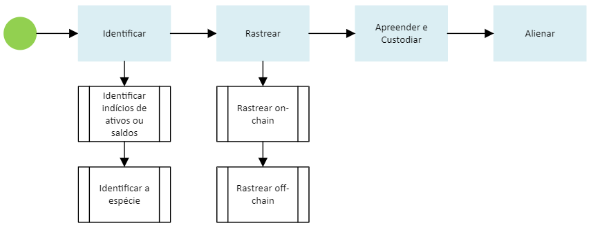
Figura 76 - Tarefas do comando “Rastrear” - Fonte: Manual de Apoio à Investigação de
Criptoativos/DFIN/CGRC/Dicor/PF
Orastreamento on-chainconsiste na análise de transações e dados registrados diretamente nas redes blockchain. Essa técnica permite acompanhar, por exem plo, o fluxo de ativos virtuais como Bitcoin, Ethereum e Tether (USDT), com base em informações públicas e imutáveis disponíveis nas respectivas blockchains. Diferentemente do saldo representativo que uma pessoa possa ter junto a uma PSAV (Prestadora de Serviço de Ativo Virtual) do tipo CEX, o rastreamento On-Chain está relacionado à propriedade de fato dos ativos, observável por meio das transações registradas.
Entre as principais características do rastreamento On-Chain estão:
O rastreamento On-Chain permite verificar transações entre endereços públi cos, consultar saldos disponíveis e analisar interações com contratos inteligentes, como os que envolvem tokens ERC-20 na rede Ethereum. Para isso, utilizam -se exploradores de blockchain como Blockchain.com (Bitcoin), Etherscan.io (Ethereum) e Tronscan.org (Tron), nos quais é possível inserir o endereço público ou o hash da transação como ponto de partida para a análise investigativa.
Ao investigar um endereço na rede Ethereum por meio do Etherscan, por exemplo, é possível visualizar transações com a criptomoeda nativa ETH.
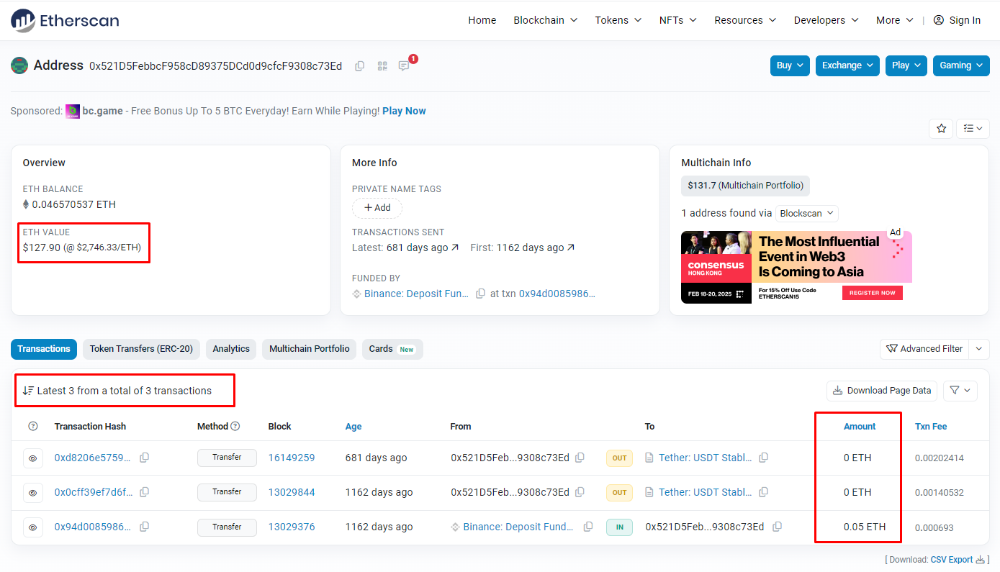
Figura 77 - Excerto de pesquisa de endereço público na rede Ethereum na aba Transactions (que
traz somente as transações na moeda nativa ETH) – Fonte: Manual de Apoio à Investigação de Criptoativos/DFIN/CGRC/Dicor/PF
No entanto, o investigador não deve se limitar a essa aba, pois a Ethereum também comporta tokens como o Tether (USDT), frequentemente associado a práticas criminosas. A aba “Token Transfers (ERC-20)” revela movimentações desses tokens, como entradas e saídas de milhões de dólares em USDT, que podem ter como destino PSAVs como Binance. A partir daí, é possível solicitar judicialmente os dados de escrituração interna da PSAV para entender o destino dos ativos, que podem ter sido convertidos em moeda fiduciária, transferidos para outros endereços ou mantidos como saldo representativo.
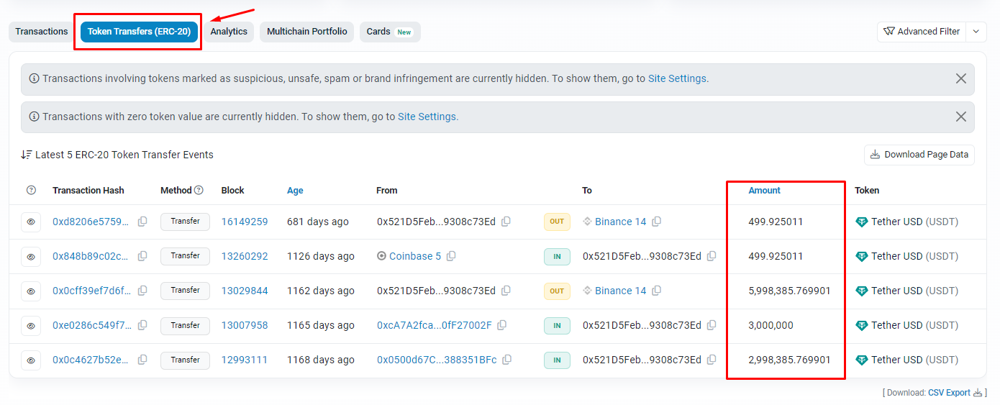
Figura 78 - Excerto de pesquisa de endereço público na rede Ethereum na aba Token Transfers
(ERC-20) (representativo de Tether USDT) - Fonte: Manual de Apoio à Investigação de Cripto ativos/DFIN/CGRC/Dicor/PF
A representação em linha de tempo cronológica dessas transações pode ser vista na próxima figura. Note que o investigado (endereço pesquisado) recebeu Tether USDT de duas pessoas anônimas. Por outro lado, ele recebeu Tether USDT da PSAV Coinbase e enviou para a Binance. Essas PSAVs poderão responder aos pedidos judiciais de quebra visando à obtenção dos dados das contrapartes envolvidas. Note-se que 6 milhões em Tether USDT foram para a Binance e somente ela poderá nos informar o que ocorreu daí em diante.
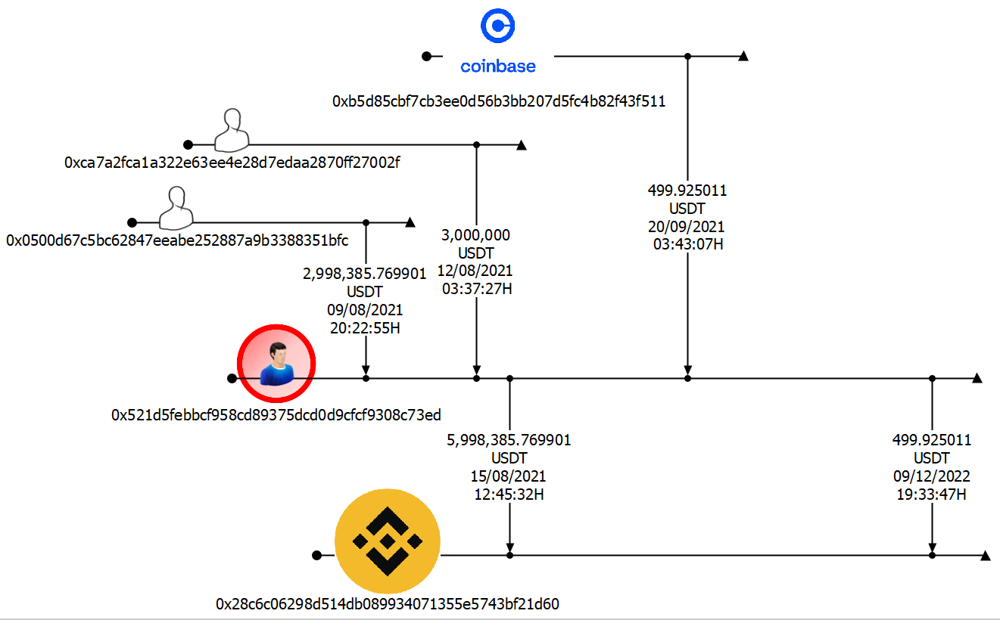
Figura 79 - Linha de Tempo de transações com ativos virtuais Tether USDT-destino final =
Binance - Fonte: Manual de Apoio à Investigação de Criptoativos/DFIN/CGRC/Dicor/PF
Além dos exploradores, existem ferramentas especializadas que ampliam a capacidade de rastreamento. Entre as pagas, destacam-seChainalysiseTRM, e entre as gratuitas,Arkham,MetasleutheBlockpath. Essas plataformas permitem visualizar fluxos de ativos, identificar entidades associadas a endereços e mitigar o anonimato. Por exemplo, ao utilizar a Metasleuth com o mesmo endereço analisado no Etherscan, é possível observar que o endereço está vinculado à Binance, o que indica que foi gerado no momento do cadastro do usuário. Essa informação é valiosa, pois permite solicitar dados cadastrais à PSAV e verificar se o endereço pertence ao investigado ou a um possível “laranja”.
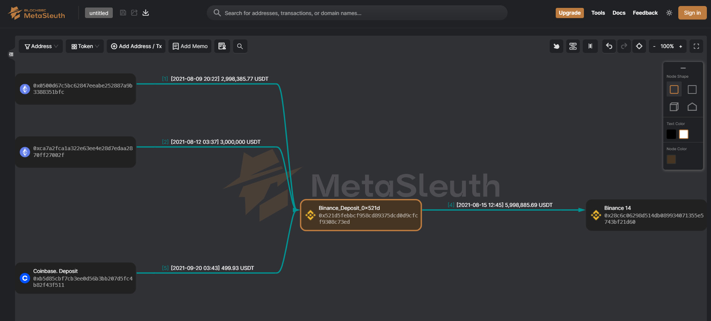
Figura 80 - Excerto da tela de rastreamento On-Chain da Metasleuth – Fonte: Manual de Apoio
à Investigação de Criptoativos/DFIN/CGRC/Dicor/PF
Ferramentas como Arkham também oferecem visualizações gráficas que facilitam a compreensão dos fluxos e das conexões entre endereços, contribuindo significativamente para investigações financeiras e criminais envolvendo ativos virtuais.
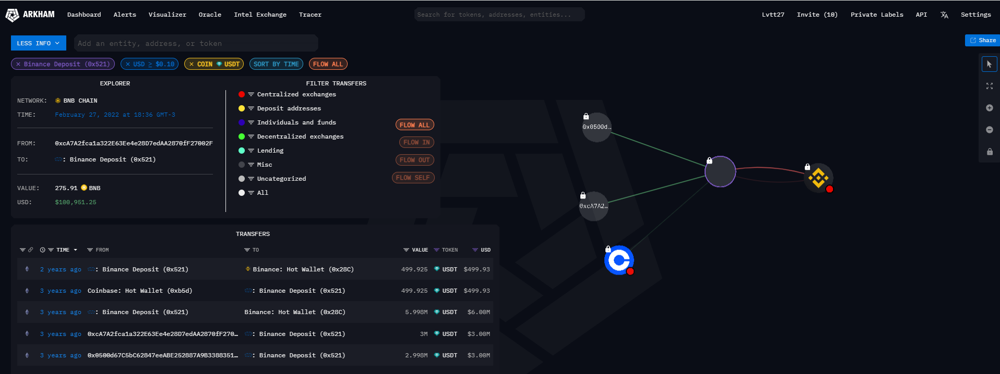
Figura 81 - Excerto da tela de rastreamento On-Chain da Arkham - Fonte: Manual de Apoio à
Investigação de Criptoativos/DFIN/CGRC/Dicor/PF
O rastreamento off-chain consiste na obtenção de informações que não estão registradas diretamente na blockchain pública. Esses dados, por não serem aces síveis por meio de exploradores ou ferramentas de análise on-chain, exigem fontes externas para sua coleta. Isso ocorre, sobretudo, quando os saldos representativos de operações estão sob custódia de Prestadores de Serviços de Ativos Virtuais (PSAVs) do tipo CEX, os quais mantêm essas informações em sistemas próprios, fora do escopo da transparência da rede distribuída.
Esse tipo de rastreamento envolve:
Ao identificar que um endereço público sob investigação transferiu criptoativos para um endereço de depósito vinculado a uma Prestadora de Serviço de Ativo Virtual (PSAV), como uma CEX, o rastreamentoon-chaindeve ser imediatamente interrompido.
Isso ocorre porque, a partir desse ponto, os ativos passam a ser custodiados emcarteiras coletivasda PSAV que agregam os fundos de diversos usuários. Essas carteiras funcionam como “contas-bolsão”, nas quais os saldos individuais deixam de ser visíveis na blockchain pública. Assim, qualquer tentativa de continuar o rastreamentoon-chainpode gerar interpretações equivocadas, já que as transações subsequentes não estão necessariamente relacionadas ao investigado.
Por exemplo, se um endereço investigado envia criptoativos para uma carteira de depósito atribuída a um cliente da Binance, logo depois a Binance extrairá, de forma automática e seguindo regras de negócios próprias, os criptoativos do endereço de depósito e os enviará para uma carteira “bolsão”. Esse endereço “bolsão” representa uma estrutura interna da corretora, utilizada para consolidar depósitos de milhares de clientes. A partir daí, o rastreamento eficaz exige uma abordagemoff-chain, voltada à obtenção de dados internos da conta junto à PSAV a fim de verificar o histórico de movimentações e vínculos com outros usuários.
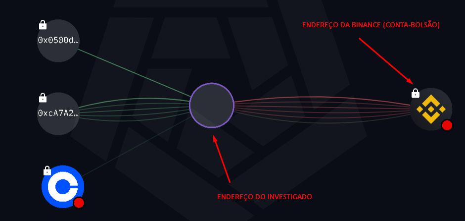
Figura 82 - Indicação de um endereço bolsão da Binance - Fonte: Manual de Apoio à Inves
tigação de Criptoativos/DFIN/CGRC/Dicor/PF
Essas informações não são públicas e, portanto, devem ser requisitadas por meio de medidas judiciais, garantindo precisão na reconstrução dos fluxos financeiros e na identificação de eventuais práticas ilícitas.
Em resumo, o rastreamento off-chain é essencial paracompletar a trilha investigativaquando os dados públicos não são suficientes para identificar o pro prietário, o destino dos ativos ou os vínculos com atividades ilícitas. Ele depende decooperação institucional, medidas judiciais e recursos tecnológicos avançados.
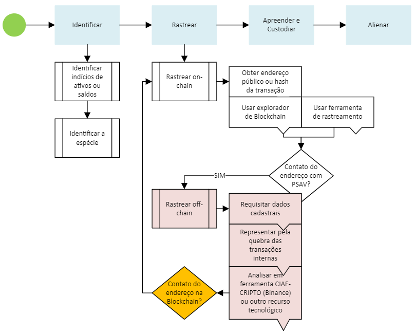
Figura 83 - Rastreamento Off-Chain - Fonte: Manual de Apoio à Investigação de Criptoativos/
DFIN/CGRC/Dicor/PF
A apreensão de ativos virtuais ou saldos representativos em operações policiais exige planejamento prévio para garantir eficácia e reduzir riscos.Isso se deve tanto à natureza pouco familiar desses ativos quanto à sua alta portabilidade, que demanda ação rápida por parte das autoridades.
Além disso, o tipo de custódia dos ativos influencia diretamente os procedi mentos de apreensão. As carteiras digitais se dividem em dois tipos principais:
Essa distinção é crucial, pois os métodos de apreensão variam conforme o tipo de carteira.
Diante disso, o processo de apreensão deve seguir três etapas principais:
1. Planejamento
2. Execução das medidas de apreensão
3. Custódia e solicitação de alienação
Cada etapa envolve subtarefas específicas que serão detalhadas posterior mente.
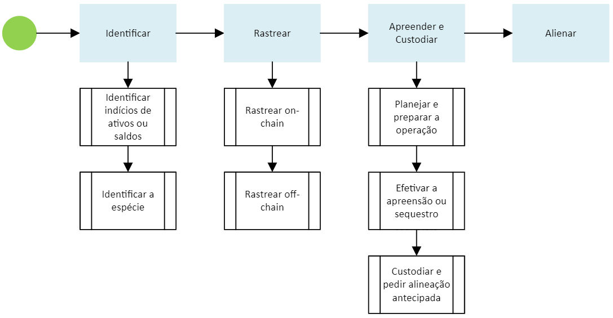
Figura 84 - Tarefas do comando “Apreender e Custodiar” - Fonte: Manual de Apoio à Inves
tigação de Criptoativos/DFIN/CGRC/Dicor/PF
O Planejamento e Preparação envolve a constituição de equipes e indicação de específicas atribuições a determinados policiais capacitados na temática. Envolve também os pedidos judiciais e a criação de uma Carteira Oficial de Custódia para recepção dos ativos virtuais apreendidos. O gráfico a seguir apresenta as subtarefas.
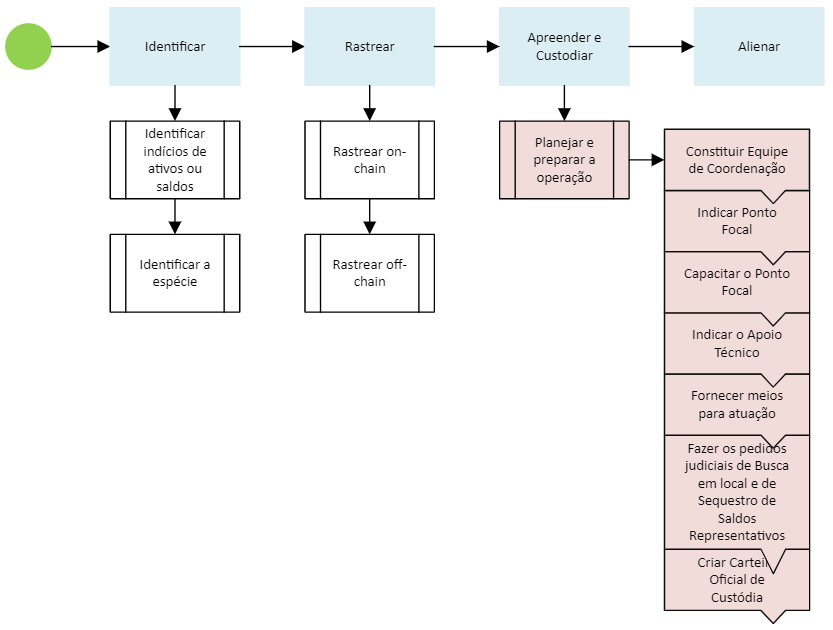
Figura 85 - Subtarefas da tarefa “Planejar e Preparar” - Fonte: Manual de Apoio à Investigação
de Criptoativos/DFIN/CGRC/Dicor/PF
Deflagraçãoé formada por policiais encarregados de organizar as diligências de busca e apreensão, incluindo geralmente a autoridade policial e os investigadores diretamente envolvidos no caso. Em operações que envolvem ativos virtuais ou o sequestro de saldos representativos, essa equipe assume responsabilidades adicionais. Entre elas, destaca-se a necessidade de indicar pontos focais (policiais previamente capacitados para atuar como refe rência técnica durante as buscas) e garantir que esses profissionais recebam treinamento adequado antes da operação. Além disso, a Coordenação deve designar o Apoio Técnico, composto por policiais com maior especialização na temática de ativos virtuais, e assegurar que tanto os pontos focais quanto o apoio técnico disponham dos meios necessários para atuar com eficiência. Essa estrutura visa garantir que os procedimentos de apreensão sejam realizados com rapidez e precisão, evitando que ativos digitais sejam ocultados ou transferidos por membros da organização investigada.
O ponto focal funciona como o primeiro filtro no local da busca, orientando a equipe e estabelecendo contato técnico com o Apoio Técnico. A rapidez na identificação e no tratamento dos elementos encontrados é crucial, pois qualquer demora pode permitir que membros da organização investigada interfiram, comprometendo a apreensão dos ativos. Portanto, a atuação ágil e especializada do ponto focal é determinante para o sucesso da operação.
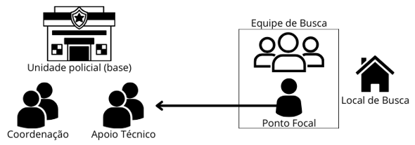
Figura 86 - Esquema de divisão das equipes e respectivos locais de atuação-Fonte: Manual
de Apoio à Investigação de Criptoativos/DFIN/CGRC/Dicor/PF
Outro aspecto fundamental é o contato antecipado com as Prestadoras de Serviços de Ativos Virtuais (PSAVs), que receberão as ordens de sequestro de saldos. A equipe de investigação deve avaliar o momento ideal para envio das ordens, antes ou durante a deflagração, considerando o risco de alerta ao investigado. Por fim, recomenda-se validar previamente os canais de comunicação com cada PSAV e preparar uma tabela com os dados cadastrais do investigado (nome, CPF, CNH, data de nascimento, passaporte, e-mail e telefone), que deve acompanhar a ordem judicial.
Oficial de Custódiaé uma etapa essencial para garantir a guarda segura dos ativos virtuais apreendidos durante operações policiais. Essa carteira deve ser providenciada previamente pela equipe de Coordenação e, preferencialmente, deve utilizar umahardwallet, devido ao alto nível de segurança que esse tipo de dispositivo oferece. Modelos comoLedgereTrezorsão recomendados por sua confiabilidade e ampla compatibilidade com diferentes blockchains e ativos. Caso não seja possível adquirir uma hardwallet, pode-se utilizar um celular ou computador para instalar umasoftwalletconfiá vel, comoTrust Wallet,Metamask,ExodusouElectrum, desde que suas características técnicas sejam adequadas ao caso. É fundamental que a equipe consulte previamente aDFINpara validar a aplicação escolhida, considerando possíveis vulnerabilidades. Alguns cuidados devem ser observados: evitar o uso depaper wallets, garantir que o dispositivo esteja livre de malwares e que a carteira ofereça suporte aos ativos mais prováveis de serem apreendidos. Além disso, o processo de criação da carteira deve ser documentado detalhada mente, incluindo os policiais envolvidos, os lacres utilizados para proteger informações sensíveis (como SEEDs e PINs), e o local de armazenamento dos envelopes lacrados.
A apreensão de ativos virtuais ou o sequestro de saldos representativos pode ocorrer em diferentes cenários, dependendo do tipo de custódia adotado pelos alvos da investigação. Esses ativos podem estar sobcustódia de terceiros, como as PSAVs do ipo CEX ou sobcustódia própria, mantidos diretamente pelo investigado. No caso da custódia própria, o acesso à carteira pode ser facilitado ou dificultado conforme a existência de elementos como aFrase Secreta (Seed). Para cada uma dessas situações, há procedimentos específicos a serem seguidos, organizados em três fluxos distintos (Fluxos 1, 2 e 3), que orientam a atuação policial conforme o tipo de custódia e os elementos encontrados durante a deflagração. Esses fluxos visam garantir a efetividade da apreensão, respeitando as particularidades técnicas e jurídicas de cada cenário.
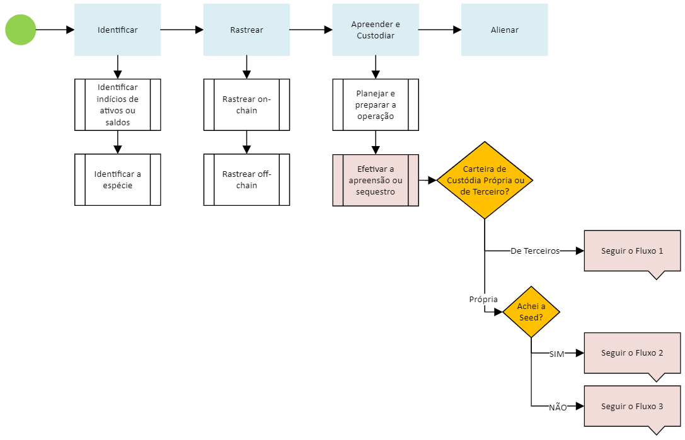
Figura 87 - Subtarefas da efetivação da apreensão - Fonte: Manual de Apoio à Investigação
de Criptoativos/DFIN/CGRC/Dicor/PF
O sequestro de saldos representativos de ativos virtuais sob custódia de ter ceiros, ou seja, mantidos por PSAVs do tipo CEX, é realizado por meio do envio de ordem judicial à PSAV, que deve bloquear ou congelar a conta do usuário.
Em agosto de 2025, o Conselho Nacional de Justiça (CNJ) lançou o CRIPTOJUD, um sistema eletrônico desenvolvido para automatizar a localização, o bloqueio e o rastreamento de criptoativos (como Bitcoin) de devedores, funcio nando de forma similar ao Sisbajud. O sistema permite que juízes enviem ordens judiciais diretamente às corretoras nacionais de criptoativos por meio de um portal integrado, agilizando o cumprimento de decisões judiciais e aumentando a segurança jurídica no combate à ocultação de patrimônio.
Esse procedimento é, em geral, mais simples, mas pode se tornar complexo quando envolve PSAVs estrangeiras, especialmente aquelas que exigem coopera ção internacional formal (MLAT) para cumprir ordens judiciais brasileiras.
Há casos em que nem mesmo o MLAT é eficaz, como quando a PSAV está sediada em jurisdições pouco colaborativas ou foi criada com o propósito de dificultar a atuação estatal. Nesses cenários, a equipe policial deve avaliar se vale a pena seguir com o MLAT ou tentar acessar diretamente a conta do alvo durante a diligência, por meio de elementos como frases secretas, logins e senhas. Se o acesso for obtido, os ativos podem ser transferidos para a Carteira Oficial de Custódia da Polícia Federal.
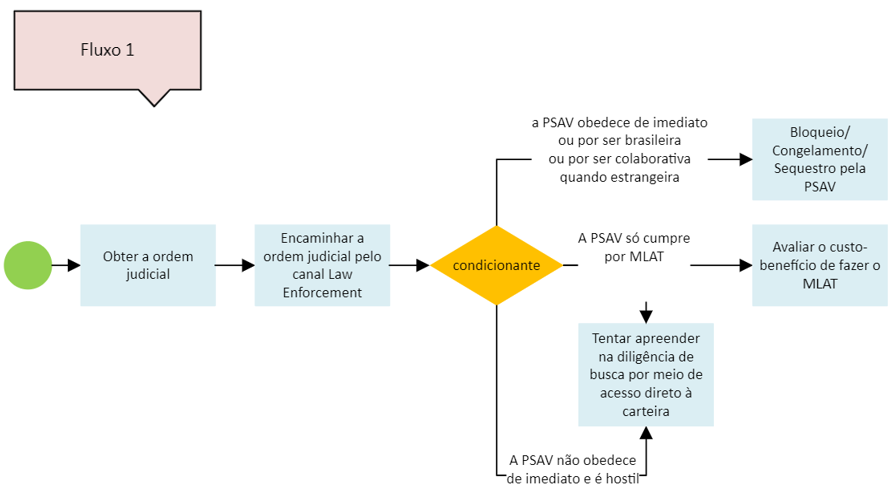
Figura 88 - Fluxo para sequestro de saldos representativos junto a PSAVs - Fonte: Manual
de Apoio à Investigação de Criptoativos/DFIN/CGRC/Dicor/PF
Quando os ativos virtuais estão sob custódia própria, ou seja, mantidos direta mente pelos alvos da investigação, a abordagem para apreensão varia conforme a disponibilidade de elementos de acesso. O cenário se divide em dois: quando a Frase Secreta (Seed) ou chave privada é localizada, e quando esses elementos não são encontrados.
Há uma hierarquia de importância entre os dados buscados. A Seed permite acesso total à carteira; a chave privada dá acesso ao endereço vinculado; o PIN com login pode permitir acesso via aplicativo; e, na ausência desses, o endereço público pode ser usado para vincular o ativo ao investigado. Quando a Seed ou chave privada é encontrada, recomenda-se que esses dados sejam enviados à equipe de Apoio Técnico na base, por meio seguro (como o Teams), para que os procedimentos sejam realizados em ambiente controlado e com os recursos adequados.
Além disso, é importante que a mensagem de envio contenha informações sobre o contexto da localização do elemento, como o cômodo onde foi encontrado e a quem pertence, para garantir rastreabilidade e segurança jurídica.
Figura 89 - Exemplo de envio de SEED para a equipe
de Apoio Técnico.
Durante a confecção do auto de arrecadação no local da busca, é funda mentalnão registrar integralmente a Frase Secreta (Seed)encontrada, pois esse documento será inserido nos autos da investigação e poderá ser acessado por diversas pessoas, o que comprometeria a segurança dos ativos. A Seed permite acesso total à carteira, e sua exposição representa um risco crítico.
A forma de arrecadação física de elementos sensíveis como aFrase Secreta (Seed)e achave privadaexige cuidados rigorosos para preservar a segurança dos ativos virtuais e da equipe policial. Esses itensnão devem ser armazenados de forma visível, como em sacos plásticos transparentes, pois isso os torna vulneráveis a acessos indevidos.
Recomenda-se o uso deenvelopes opacos, como os pardos, ou até mesmo asimples dobra da folha de papelonde a Seed está anotada, como medida de proteção. Essas práticas ajudam a garantir que os dados críticos não sejam expostos durante o cumprimento do mandado judicial, mantendo a integridade da operação e a segurança jurídica da apreensão.
Antes de enviar qualquer elemento encontrado à equipe de Apoio Técnico na base, recomenda-se que oPonto Focalda equipe seja consultado para validar se o item é de fato indicativo de posse de ativos virtuais. Também é importante comunicar ochefe da equipesobre o envio, garantindo que todos estejam cientes da possível apreensão.
Na base, a equipe de Apoio Técnico estará preparada para realizar a recu peração da carteira e transferir os ativos para a Carteira Oficial de Custódia, utilizando a Seed ou chave privada encontrada. Esse fluxo operacional visa garantir segurança, rastreabilidade e eficácia na apreensão de ativos virtuais.
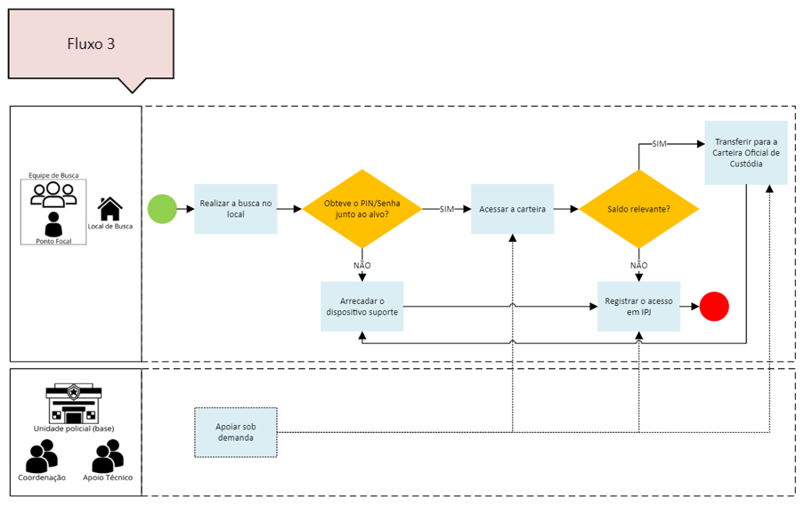
Figura 90 - Fluxo de apreensão de ativos virtuais a partir do encontro de SEED/Chave privada
no local de busca - Fonte: Manual de Apoio à Investigação de Criptoativos/DFIN/CGRC/Dicor/PF
A Frase Secreta foi localizada: o que fazer?
Se você for oPonto Focal, deverá encaminhar aFrase Secreta (Seed)encontrada no local da busca para a equipe deApoio Técnico, utilizando canal seguro.
Se você for daequipe de Apoio Técnico e houverautorização judicial, deverá restaurar a carteira com base na Seed recebida e, caso existam ativos, realizar atransferência para a Carteira Oficial de Custódiapreviamente criada pela Coordenação.
O processo de recuperação de uma carteira de ativos virtuais a partir de uma Frase Secreta (Seed) envolve cinco etapas principais. Primeiro, é necessário escolher o meio pelo qual a restauração será feita: pode-se optar por uma hardwallet, um software de computador ou uma aplicação de celular, todos devidamente configurados.
Em seguida, deve-se selecionar a opção “Restaurar Carteira” na interface da ferramenta escolhida, o que permitirá iniciar o processo de recuperação.
Na terceira etapa, o usuário deve inserir a Frase Secreta, composta por 12, 18 ou 24 palavras em inglês, selecionadas de um conjunto fixo de 2048 palavras.
Após isso, algumas carteiras exigem a configuração de uma senha ou PIN, que será utilizado para autorizar transações ou desbloquear o acesso à carteira.
Por fim, a carteira restaurada sincroniza com as blockchains, recuperando transações, saldos e tokens associados, permitindo acesso completo aos ativos originalmente vinculados à Seed.
A Frase Secreta NÃO foi localizada: o que fazer?
Quando são identificadas carteiras de custódia própria no local da busca, mas não são encontradas suas Frases Secretas ou Chaves Privadas, a apreensão dos ativos deve ser realizada presencialmente, pelo Ponto Focal, com apoio da equipe. Nessa situação, é necessário que a equipe diligencie para tentar obter o PIN ou senha que permita o desbloqueio da carteira.
Uma vez desbloqueada, caso obtido o PIN ou senha, o Ponto Focal deve realizar a transferência dos ativos para a Carteira Oficial de Custódia, previamente criada pela Coordenação. Esse procedimento pode ser orientado remotamente pela equipe de Apoio Técnico, por meio de chamadas via plataforma Teams, garantindo suporte técnico em tempo real e maior segurança na execução da apreensão.
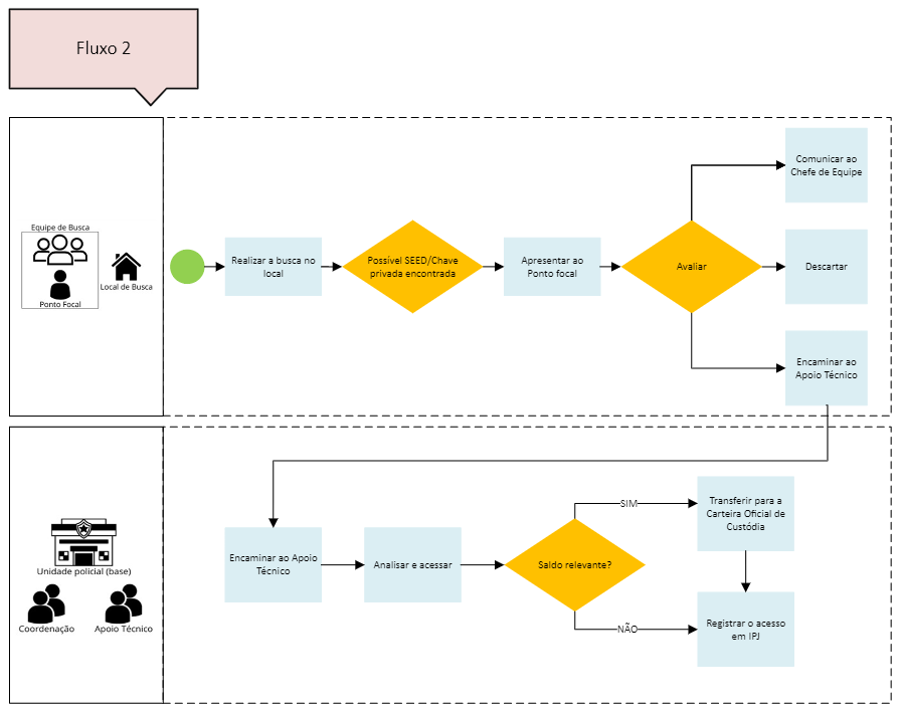
Figura 91 - Fluxo de apreensão de ativos virtuais a partir de carteiras de custódia própria iden
tificadas no local de busca, quando as respectivas Frase Secreta e chaves privadas não forem encontradas - Fonte: Manual de Apoio à Investigação de Criptoativos/DFIN/CGRC/Dicor/PF
Transferindo os ativos encontrados
A transferência de ativos virtuais da carteira do alvo para aCarteira Oficial de Custódiadeve ser feita com extremo cuidado para evitar erros que possam resultar na perda dos ativos. Algumas boas práticas são essenciais:
Deve-se sempre usar o recurso de copiar/colar ou escanear QR
Codes gerados por softwares confiáveis, evitando erros que possam
levar à perda definitiva dos ativos.
Para documentar adequadamente o procedimento, exige-se a elaboração de umaInformação de polícia judiciária (IPJ), detalhando:
A alienação de ativos virtuais apreendidos em operações policiais é reco mendada a se fazer com urgência devido à alta volatilidade desses ativos e à precariedade de sua custódia. Diferente dos mercados regulados, o mercado de criptomoedas é mais suscetível a manipulações e oscilações imprevisíveis, o que pode levar à rápida perda de valor dos bens apreendidos.
A Recomendação nº 30 do CNJ e o artigo 144-A do Código de Processo Penal respaldam a alienação antecipada desses ativos, especialmente quando há risco de depreciação ou dificuldade de manutenção. Como o Judiciário ainda não disponibiliza carteiras próprias nem indica PSAVs para custódia, essa respon sabilidade recai sobre as equipes policiais, aumentando os riscos operacionais e de segurança.
Diante disso, recomenda-se que o pedido de alienação antecipada seja feito quanto antes, podendo ocorrer até de forma concomitante ao pedido de apreensão.
Existem duas formas juridicamente possíveis de realizar a alienação: leilão ou alienação direta em PSAVs. Embora o leilão seja previsto no CPP, a alienação direta em PSAVs tem sido preferida por juízes devido à maior viabilidade técnica e econômica, além de permitir a venda pelo valor de mercado sem custos com comissão de leiloeiro.
Quando autorizada, a PSAV responsável pela alienação deve apresentar um plano de liquidação, e os valores obtidos com a venda devem ser recolhidos em conta judicial, garantindo transparência e segurança jurídica ao processo.
Caberá à autoridade policial representar ao Judiciário pela alienação dos ativos. Algumas orientações gerais para o pedido a ser formulado judicialmente envolvem (a) justificar a necessidade da alienação antecipada, dadas as carac terísticas da tecnologia (volatilidade, dificuldade de custódia); (b) sugerir que, previamente à alienação, sejam oficiadas as principais PSAVs nacionais informando os ativos que se pretende alienar e para apresentarem um plano de alienação (com taxas, prazos, procedimentos);
Em alguns casos, a autoridade policial pode optar por oficiar previamente as PSAVs e, só após receber as propostas, submeter ao juiz o plano de alienação para homologação. Isso não invalida o procedimento, desde que seja devidamente fundamentado.
Por fim, nos casos em que houver indícios de lavagem de dinheiro, os valores obtidos com a alienação podem ser vinculados ao Funapol, utilizando o código correspondente.
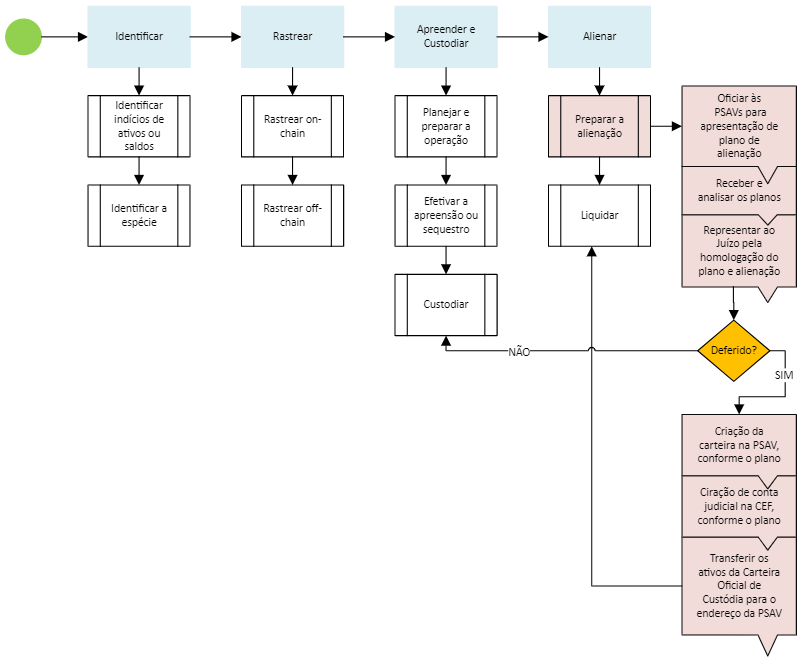
Figura 92 - Sugestão de rito de alienação conforme a experiência compilada pela DFIN
- Manual de Apoio à Investigação de Criptoativos/DFIN/CGRC/Dicor/PF
O ambiente dos criptoativos representa um desafio singular para investigações criminais, devido à sua natureza descentralizada, anônima e global. No entanto, com o uso de ferramentas adequadas, técnicas avançadas e conhecimento profundo sobre o funcionamento das blockchains, é possível rastrear transações, identificar fluxos de ativos e, em muitos casos, associar identidades a endereços e carteiras.
Métodos como o rastreamento on-chain e off-chain, o uso de criptografia assimétrica e a análise de dados públicos em exploradores de blockchain permitem uma visão detalhada das movimentações no ecossistema digital. Para isso, é essencial que os investigadores estejam atualizados sobre tecnologias emergentes, tendências e legislações, dado o dinamismo do setor.
Além da capacitação técnica, é fundamental que as investigações respeitem os princípios éticos e legais, garantindo transparência e conformidade com normas nacionais e internacionais. Com o crescimento dos ativos virtuais e sua integração ao sistema financeiro tradicional, o papel do investigador torna-se cada vez mais estratégico, sendo crucial para a segurança, legalidade e confiança nesse novo cenário econômico.